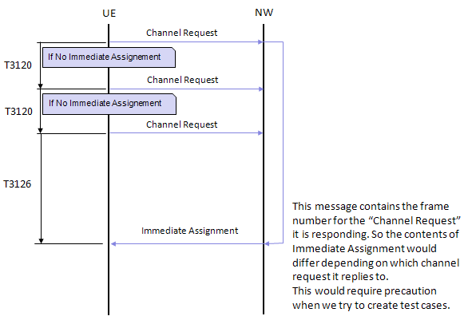
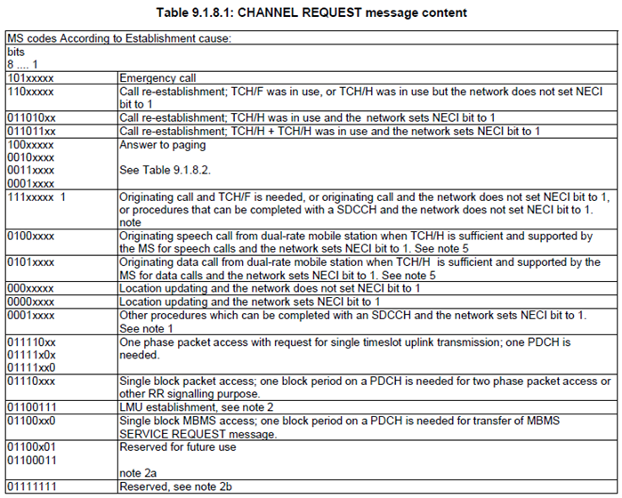
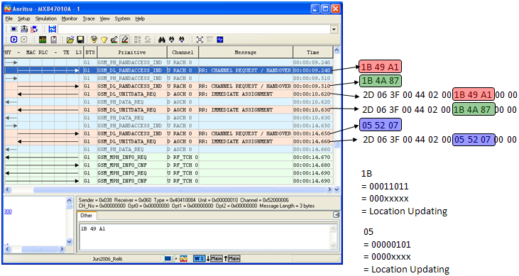

| Basic Call Processing (Voice) - GSM | ||||||||||||||||||||||||||||||||||||||||||||||||||||||||||||||||||||||||||||||||||||||||||||||||||||||||||||||||||||||||
|
This page is based on a call processing sequence between an MS and GSM Network Simulator. The details of the sequence and contents of the messages would differ from those from live network, but I think this would contain all the essential components of the call processing. The value in the "Time(sec.ms)/Memo" column is just for a reference to give you rough timing between each step and the next step. It is not the clean-cut/absolute value. (This is at very early stages of the whole page that I am planning, so I will have on-going update for a long period).
NAS:RR,System Information Type 1 System Information Type 1 ::= DIVISION +-L2 Pseudo Length ::= V | +-L2 Pseudo Length value ::= INT (0..63) [21] | +-N(SD)or0_1 ::= FIX [0] | +-N(SD)or0_2 ::= FIX [1] +-Skip Indicator ::= V | +-Skip Indicator ::= FIX [0] +-RR management Protocol Discriminator ::= V | +-Protocol Discriminator ::= PD [6] +-System Information Type 1 Message Type ::= V | +-Message Type ::= MSG [19] +-Cell Channel Description ::= V | +-Octet1-16 ::= DIVISION | +-Format-ID bit128-127 ::= SWITCH [bit map 0] | +-(Format-ID bit128-127)=0 ::= BRANCH | +-spare ::= FIX [0] | +-Cell Allocation Absolute RF Channel Number bit124-121 ::= INT (0..15) [0] | +-Cell Allocation Absolute RF Channel Number bit120-001 ::= OCTETARRAY SIZE(15..15) [000000000000000000000000000000] +-RACH Control Parameter ::= V | +-Octet1 ::= DIVISION | | +-Max retrans ::= CHOICE [Maximum 1 retransmission] | | +-Tx-integer ::= CHOICE [3 slots used to spread transmission] | | +-CELL_BAR_ACCESS ::= CHOICE [The cell is not barred] | | +-Call reestablishment allowed ::= CHOICE [Call Reestablishment not allowed in the cell] | +-Octet2-3 ::= DIVISION | +-Access Control Class C15-C11 ::= INT (0..31) [0] | +-Emergency Call allowed ::= CHOICE [Emergency call allowed in the cell to all MSs] | +-Access Control Class C9-C0 ::= INT (0..1023) [0] +-SI 1 Rest Octets ::= V +-flg0 ::= SWITCH [L] +-Band indicator ::= CHOICE [ARFCN indicates 1800 band] +-spare padding ::= PAD SIZE(23..23) [2B]
NAS:RR,System Information Type 2 System Information Type 2 ::= DIVISION +-L2 Pseudo Length ::= V | +-L2 Pseudo Length value ::= INT (0..63) [22] | +-N(SD)or0_1 ::= FIX [0] | +-N(SD)or0_2 ::= FIX [1] +-Skip Indicator ::= V | +-Skip Indicator ::= FIX [0] +-RR management Protocol Discriminator ::= V | +-Protocol Discriminator ::= PD [6] +-System Information Type 2 Message Type ::= V | +-N(SD)or0 ::= FIX [0] | +-Message Type ::= MSG [1A] +-BCCH Frequency List ::= V | +-Octet1 ::= DIVISION | | +-bit128-127 ::= INT (0..3) [0] | | +-EXT-IND ::= CHOICE [The information element carries the complete BA] | | +-BA-IND ::= INT (0..1) [0] | | +-bit124-121 ::= INT (0..15) [0] | +-Octet2-16 ::= DIVISION | +-bit120-001 ::= OCTETARRAY SIZE(15..15) [000000000000000000000000000200] +-NCC Permitted ::= V | +-NCC permitted ::= INT (0..255) [255] +-RACH Control Parameter ::= V +-Octet1 ::= DIVISION | +-Max retrans ::= CHOICE [Maximum 1 retransmission] | +-Tx-integer ::= CHOICE [3 slots used to spread transmission] | +-CELL_BAR_ACCESS ::= CHOICE [The cell is not barred] | +-Call reestablishment allowed ::= CHOICE [Call Reestablishment not allowed in the cell] +-Octet2-3 ::= DIVISION +-Access Control Class C15-C11 ::= INT (0..31) [0] +-Emergency Call allowed ::= CHOICE [Emergency call allowed in the cell to all MSs] +-Access Control Class C9-C0 ::= INT (0..1023) [0]
NAS:RR,System Information Type 3 System Information Type 3 ::= DIVISION +-L2 Pseudo Length ::= V | +-L2 Pseudo Length value ::= INT (0..63) [18] | +-N(SD)or0_1 ::= FIX [0] | +-N(SD)or0_2 ::= FIX [1] +-Skip Indicator ::= V | +-Skip Indicator ::= FIX [0] +-RR management Protocol Discriminator ::= V | +-Protocol Discriminator ::= PD [6] +-System Information Type 3 Message Type ::= V | +-Message Type ::= MSG [1B] +-Cell Identity ::= V | +-CI value ::= INT (0..65535) [1] +-Location Area Identification ::= V | +-Octet1 ::= DIVISION | | +-MCC digit 2 ::= INT (0..15) [0] | | +-MCC digit 1 ::= INT (0..15) [0] | +-Octet2 ::= DIVISION | | +-MNC digit 3 ::= INT (0..15) [15] | | +-MCC digit 3 ::= INT (0..15) [1] | +-Octet3 ::= DIVISION | | +-MNC digit 2 ::= INT (0..15) [1] | | +-MNC digit 1 ::= INT (0..15) [0] | +-Octet4-5 ::= DIVISION | +-LAC ::= INT (0..65535) [1] +-Control Channel Description ::= V | +-Octet1 ::= DIVISION | | +-MSC Release ::= CHOICE [MSC is Release '98 or older] | | +-Attach-detach allowed ::= CHOICE [MSs in the cell shall apply] | | +-BS-AG-BLKS-RES ::= INT (0..7) [0] | | +-CCCH-CONF ::= CHOICE [1 basic physical channel used for CCCH: not combined with SDCCHs] | +-Octet2 ::= DIVISION | | +-spare ::= FIX [0] | | +-CBQ3 ::= CHOICE [Iu mode not supported] | | +-spare ::= FIX [0] | | +-BS-PA-MFRMS ::= CHOICE [2 multiframes period] | +-Octet3 ::= DIVISION | +-T3212 time-out value ::= INT (0..255) [0] +-Cell Options ::= V | +-DN-IND ::= CHOICE [Dynamic ARFCN mapping is not used by the PLMN] | +-PWRC ::= CHOICE [PWRC is set] | +-DTX ::= CHOICE [2-The MS shall not use uplink discontinuous transmission] | +-RADIO-LINK-TIMEOUT ::= CHOICE [16] +-Cell Selection Parameters ::= V | +-Octet1 ::= DIVISION | | +-CELL-RESELECT-HYSTERESIS ::= CHOICE [0 dB RXLEV hysteresis for LA re-selection] | | +-MS-TXPWR-MAX-CCH ::= INT (0..31) [8] | +-Octet2 ::= DIVISION | +-ACS ::= CHOICE [System information type 16 and 17 are not broadcast on the BCCH] | +-NECI ::= CHOICE [New establishment causes are not supported] | +-RXLEV-ACCESS-MIN ::= INT (0..63) [0] +-RACH Control Parameters ::= V | +-Octet1 ::= DIVISION | | +-Max retrans ::= CHOICE [Maximum 1 retransmission] | | +-Tx-integer ::= CHOICE [3 slots used to spread transmission] | | +-CELL_BAR_ACCESS ::= CHOICE [The cell is not barred] | | +-Call reestablishment allowed ::= CHOICE [Call Reestablishment not allowed in the cell] | +-Octet2-3 ::= DIVISION | +-Access Control Class C15-C11 ::= INT (0..31) [0] | +-Emergency Call allowed ::= CHOICE [Emergency call allowed in the cell to all MSs] | +-Access Control Class C9-C0 ::= INT (0..1023) [0] +-SI 3 Rest Octets ::= V +-Optional selection parameters ::= DIVISION
NAS:RR,System Information Type 4 System Information Type 4 ::= DIVISION +-L2 Pseudo Length ::= V | +-L2 Pseudo Length value ::= INT (0..63) [12] | +-N(SD)or0_1 ::= FIX [0] | +-N(SD)or0_2 ::= FIX [1] +-Skip Indicator ::= V | +-Skip Indicator ::= FIX [0] +-RR management Protocol Discriminator ::= V | +-Protocol Discriminator ::= PD [6] +-System Information Type 4 Message Type ::= V | +-Message Type ::= MSG [1C] +-Location Area Identification ::= V | +-Octet1 ::= DIVISION | | +-MCC digit 2 ::= INT (0..15) [0] | | +-MCC digit 1 ::= INT (0..15) [0] | +-Octet2 ::= DIVISION | | +-MNC digit 3 ::= INT (0..15) [15] | | +-MCC digit 3 ::= INT (0..15) [1] | +-Octet3 ::= DIVISION | | +-MNC digit 2 ::= INT (0..15) [1] | | +-MNC digit 1 ::= INT (0..15) [0] | +-Octet4-5 ::= DIVISION | +-LAC ::= INT (0..65535) [1] +-Cell Selection Parameters ::= V | +-Octet1 ::= DIVISION | | +-CELL-RESELECT-HYSTERESIS ::= CHOICE [0 dB RXLEV hysteresis for LA re-selection] | | +-MS-TXPWR-MAX-CCH ::= INT (0..31) [8] | +-Octet2 ::= DIVISION | +-ACS ::= CHOICE [System information type 16 and 17 are not broadcast on the BCCH] | +-NECI ::= CHOICE [New establishment causes are not supported] | +-RXLEV-ACCESS-MIN ::= INT (0..63) [0] +-RACH Control Parameters ::= V | +-Octet1 ::= DIVISION | | +-Max retrans ::= CHOICE [Maximum 1 retransmission] | | +-Tx-integer ::= CHOICE [3 slots used to spread transmission] | | +-CELL_BAR_ACCESS ::= CHOICE [The cell is not barred] | | +-Call reestablishment allowed ::= CHOICE [Call Reestablishment not allowed in the cell] | +-Octet2-3 ::= DIVISION | +-Access Control Class C15-C11 ::= INT (0..31) [0] | +-Emergency Call allowed ::= CHOICE [Emergency call allowed in the cell to all MSs] | +-Access Control Class C9-C0 ::= INT (0..1023) [0] +-CBCH Channel Description ::= TV OPTIONAL:Omit | +-Octet1 ::= DIVISION | | +-Channel Description IEI ::= IEI [64] | +-Octet2 ::= DIVISION | | +-Channel type and TDMA offset ::= INT (0..31) [1] | | +-Timeslot number ::= INT (0..7) [0] | +-Octet3-4 ::= DIVISION | +-Training Sequence Code ::= INT (0..7) [0] | +-Hopping channel ::= SWITCH [Single RF channel] | +-(Hopping channel)=0 ::= BRANCH | +-spare ::= FIX [0] | +-Absolute RF Channel Number ::= INT (0..1023) [0] +-CBCH Mobile Allocation ::= TLV OPTIONAL:Omit | +-Octet1 ::= DIVISION | | +-Mobile Allocation IEI ::= IEI [72] | +-Octet2 ::= DIVISION | | +-Length of mobile allocation contents ::= LEN (0..255) [0] | +-Octet3- ::= DIVISION | +-Mobile Allocation RF Channel ::= OCTETARRAY SIZE(0..8) +-SI 4 Rest Octets ::= V +-SI4 Rest Octets_O ::= DIVISION | +-Optional selection parameters ::= DIVISION | | +-flg21 ::= SWITCH [L] | +-Optional Power offset ::= DIVISION | | +-flg31 ::= SWITCH [L] | +-flg11 ::= SWITCH [L] +-flg1 ::= SWITCH [L] +-(flg1)=L ::= BRANCH | +-Break indicator ::= CHOICE [Additional parameters are not sent in SYSTEM INFORMATION TYPE 7 and 8] +-spare padding ::= PAD SIZE(23..23) [2B]
NAS:RR,System Information Type 5 System Information Type 5 ::= DIVISION +-L2 Pseudo Length ::= V | +-L2 Pseudo Length value ::= INT (0..63) [18] | +-N(SD)or0_1 ::= FIX [0] | +-N(SD)or0_2 ::= FIX [1] +-Skip Indicator ::= V | +-Skip Indicator ::= FIX [0] +-RR management Protocol Discriminator ::= V | +-Protocol Discriminator ::= PD [6] +-System Information Type 5 Message Type ::= V | +-N(SD)or0 ::= FIX [0] | +-Message Type ::= MSG [1D] +-BCCH Frequency List ::= V +-Octet1 ::= DIVISION | +-bit128-127 ::= INT (0..3) [0] | +-EXT-IND ::= CHOICE [The information element carries the complete BA] | +-BA-IND ::= INT (0..1) [0] | +-bit124-121 ::= INT (0..15) [0] +-Octet2-16 ::= DIVISION +-bit120-001 ::= OCTETARRAY SIZE(15..15) [000000000000000000000000000200]
NAS:RR,System Information Type 6 System Information Type 6 ::= DIVISION +-L2 Pseudo Length ::= V | +-L2 Pseudo Length value ::= INT (0..63) [11] | +-N(SD)or0_1 ::= FIX [0] | +-N(SD)or0_2 ::= FIX [1] +-Skip Indicator ::= V | +-Skip Indicator ::= FIX [0] +-RR management Protocol Discriminator ::= V | +-Protocol Discriminator ::= PD [6] +-System Information Type 6 Message Type ::= V | +-Message Type ::= MSG [1E] +-Cell Identity ::= V | +-CI value ::= INT (0..65535) [1] +-Location Area Identification ::= V | +-Octet1 ::= DIVISION | | +-MCC digit 2 ::= INT (0..15) [0] | | +-MCC digit 1 ::= INT (0..15) [0] | +-Octet2 ::= DIVISION | | +-MNC digit 3 ::= INT (0..15) [15] | | +-MCC digit 3 ::= INT (0..15) [1] | +-Octet3 ::= DIVISION | | +-MNC digit 2 ::= INT (0..15) [1] | | +-MNC digit 1 ::= INT (0..15) [0] | +-Octet14-5 ::= DIVISION | +-LAC ::= INT (0..65535) [1] +-Cell Options ::= V | +-DTX_1 ::= BITARRAY SIZE(1..1) [0] | +-PWRC ::= CHOICE [PWRC is set] | +-DTX_2 ::= BITARRAY SIZE(2..2) [10] | +-RADIO-LINK-TIMEOUT ::= CHOICE [16] +-NCC Permitted ::= V | +-NCC permitted ::= INT (0..255) [255] +-SI 6 Rest Octets ::= V +-flg1 ::= SWITCH [L] +-flg2 ::= SWITCH [L] +-DTM_support ::= SWITCH [DTM is not supported in the serving cell] +-Band indicator ::= CHOICE [ARFCN indicates 1800 band] +-flg3 ::= SWITCH [L] +-flg4 ::= SWITCH [L] +-implicit spare ::= PAD SIZE(19..19) [2B]
Channel Request has various functionalities and the one right after power-on is is equivalent to RACH process of UMTS and LTE. Simply put, this message is to tell the network "I want to camp on you, please allocate me a radio resource that I initiate the connection process".
The one for the initial registration is as follows. (In good channel condition and in open space, the first Channel Request would reach the NW and get the immdediate Assignement with only one Channel Request. Following is a kind of worst case where the initial channel request fail to decoded by NW or UE fails to decode initial immediate assignements)

Note : T3126 starts when the last retransmission of 'Channel Request' and it stops when UE gets 'Immediate Assignement'. If UE does not get 'Immediate Assignement' until T3126 expires, UE starts cell reselection.
The exact functionality of a channel request is determined by the first 8 bits of its message and the description of the first byte is specified by the following table in 44.018.

Immediate Assignement is the answering message to the initial "Channel Request" explained above. This is to say to MS "OK, I will accept your 'channel request' and here goes the radio resource you can use for the following steps".
One of the Channel Request example would be as follows. The most important thing you have to notice is that Immediate Assignment should play back the whole Channel Request message. All MS(UE) trying to connect a cell would receive the same 'Immediate Assignement', but if the 'Channel Request' portion contained in 'Immediate Assignement' does not match the Channel Request Bytes it sent, UE should discard the Immediate Assignement message since it is not for itself.

NAS:RR,Immediate assignment Immediate assignment ::= DIVISION +-L2 Pseudo Length ::= V | +-L2 Pseudo Length value ::= INT (0..63) [11] | +-N(SD)or0_1 ::= FIX [0] | +-N(SD)or0_2 ::= FIX [1] +-Skip Indicator ::= V | +-Skip Indicator ::= FIX [0] +-RR management Protocol Discriminator ::= V | +-Protocol Discriminator ::= PD [6] +-Immediate assignment Message Type ::= V | +-Message Type ::= MSG [3F] +-Dedicated mode or TBF ::= V | +-spare ::= FIX [0] | +-TMA-Downlink-T/D ::= CHOICE [This message assigns a dedicated mode resource] +-Page Mode ::= V | +-spare ::= FIX [0] | +-spare ::= FIX [0] | +-PM ::= CHOICE [Normal paging] +-Channel Description ::= V OPTIONAL:Exist | +-Octet1 ::= DIVISION | | +-Channel type and TDMA offset ::= INT (0..31) [8] | | +-Timeslot number ::= INT (0..7) [4] | +-Octet2-3 ::= DIVISION | +-Training Sequence Code ::= INT (0..7) [0] | +-Hopping channel ::= SWITCH [Single RF channel] | +-(Hopping channel)=0 ::= BRANCH | +-spare ::= FIX [0] | +-Absolute RF Channel Number ::= INT (0..1023) [129] +-Packet Channel Description ::= V OPTIONAL:Omit | +-Octet1 ::= DIVISION | | +-Channel type ::= INT (0..31) [1] | | +-Timeslot Number ::= INT (0..7) [0] | +-Octet2-3 ::= DIVISION | +-Training Sequence Code ::= INT (0..7) [0] | +-flg1 ::= SWITCH [0] | +-(flg1)=0 ::= BRANCH | +-flg11 ::= SWITCH [0] | +-(flg11)=0 ::= BRANCH | +-spare ::= FIX [0] | +-Absolute RF Channel Number ::= INT (0..1023) [0] +-Request Reference ::= V | +-Octet1 ::= DIVISION | | +-Random Access Information ::= INT (0..255) [16] | +-Octet2-3 ::= DIVISION | +-T1' ::= INT (0..31) [9] | +-T3 ::= INT (0..63) [16] | +-T2 ::= INT (0..31) [21] +-Timing Advance ::= V | +-Timing Advance value ::= INT (0..255) [0] +-Mobile Allocation ::= LV | +-Octet1 ::= DIVISION | | +-Length of mobile allocation contents ::= LEN (0..255) [0] | +-Octet2-9 ::= DIVISION | +-Mobile Allocation RF Channel ::= OCTETARRAY SIZE(0..8) +-Starting Time ::= TV OPTIONAL:Omit | +-Octet1 ::= DIVISION | | +-Starting Time IEI ::= IEI [7C] | +-Octet2-3 ::= DIVISION | +-T1' ::= INT (0..31) [0] | +-T3 ::= INT (0..63) [0] | +-T2 ::= INT (0..31) [0] +-IA Rest Octets ::= V +-flg3 ::= SWITCH [LL] +-(flg3)=LL ::= BRANCH | +-Compressed InterRAT HO INFO IND ::= CHOICE [A compressed version of the INTER RAT HANDOVER INFO message shall not be used] +-spare padding ::= PAD SIZE(23..23) [2B]
MM : Location Updating Request
NAS:MM,Location updating request Location updating request ::= DIVISION +-Skip Indicator ::= V | +-Skip Indicator ::= FIX [0] +-Mobility management protocol discriminator ::= V | +-Protocol Discriminator ::= PD [5] +-Location updating request Message type ::= V | +-N(SD)or0_1 ::= INT (0..1) [0] | +-N(SD)or0_2 ::= INT (0..1) [0] | +-Message type ::= MSG [08] +-Ciphering Key Sequence Number ::= V | +-Octet1 ::= DIVISION | +-spare ::= FIX [0] | +-Key sequence ::= CHOICE [No key is available (MS to network)/Reserved (network to MS)] +-Location updating type ::= V | +-Octet1 ::= DIVISION | +-FOR ::= CHOICE [No follow-on request pending] | +-spare ::= FIX [0] | +-LUT ::= CHOICE [Normal location updating] +-Location Area Identification ::= V | +-Octet1 ::= DIVISION | | +-MCC digit 2 ::= INT (0..15) [0] | | +-MCC digit 1 ::= INT (0..15) [0] | +-Octet2 ::= DIVISION | | +-MNC digit 3 ::= INT (0..15) [15] | | +-MCC digit 3 ::= INT (0..15) [1] | +-Octet3 ::= DIVISION | | +-MNC digit 2 ::= INT (0..15) [1] | | +-MNC digit 1 ::= INT (0..15) [0] | +-Octet4 ::= DIVISION | | +-LAC ::= INT (0..255) [0] | +-Octet5 ::= DIVISION | +-LAC (continued) ::= INT (0..255) [10] +-Mobile Station Classmark 1 ::= V | +-Octet1 ::= DIVISION | +-spare ::= FIX [0] | +-Revisionlevel ::= CHOICE [Used by GSM phase 2 mobile stations] | +-ESIND ::= CHOICE [Controlled Early Classmark Sending option is implemented in the MS] | +-A5/1 ::= CHOICE [encryption algorithm A5/1 available] | +-RF powercapability ::= CHOICE [class 4] +-Mobile Identity ::= LV | +-Octet1 ::= DIVISION | | +-Length of mobile identity contents ::= LEN (0..255) [5] | +-Octet2 ::= DIVISION | | +-Identity digit 1 ::= INT (0..15) [15] | | +-Odd/even indication ::= CHOICE [even number of identity digits and also when the TMSI/P-TMSI is used] | | +-Type of identity ::= CHOICE [TMSI/P-TMSI] | +-Octet3-Octet10 ::= DIVISION | +-Identity digit p ::= OCTETARRAY SIZE(0..8) [21436587] +-Mobile Station Classmark 2 ::= TLV OPTIONAL:Omit +-Octet1 ::= DIVISION | +-Mobile station classmark 2 IEI ::= IEI [33] +-Octet2 ::= DIVISION | +-Length of mobile station classmark 2 contents ::= LEN (0..255) [3] +-Octet3 ::= DIVISION | +-spare ::= FIX [0] | +-Revisionlevel ::= CHOICE [Reserved for GSM phase 1] | +-ESIND ::= CHOICE [Controlled Early Classmark Sending option is not implemented in the MS] | +-A5/1 ::= CHOICE [encryption algorithm A5/1 available] | +-RF powercapability ::= CHOICE [class 1] +-Octet4 ::= DIVISION | +-spare ::= FIX [0] | +-PScapa. ::= CHOICE [PS capability not present] | +-SS Screen.Indicator ::= CHOICE [default value of phase 1] | +-SM capabi. ::= CHOICE [Mobile station does not support mobile terminated point to point SMS] | +-VBS ::= CHOICE [no VBS capability or no notifications wanted] | +-VGCS ::= CHOICE [no VGCS capability or no notifications wanted] | +-FC ::= CHOICE [When a GSM 900 band is used The MS does not support the E-GSM or R-GSM band (For definition of frequency bands see GSM 05.05)/ Reserved for future use (for definition of frequency bands see GSM05.05)] +-Octet5 ::= DIVISION +-CM3 ::= CHOICE [The MS does not support any options that are indicated in CM3] +-spare ::= FIX [0] +-LCSVACAP ::= CHOICE [location request notification via CS domain not supported] +-UCS2 ::= CHOICE [the ME has a preference for the default alphabet over UCS2.] +-SoLSA ::= CHOICE [The ME does not support SoLSA.] +-CMSP ::= CHOICE [Network initiated MO CM connection request not supported.] +-A5/3 ::= CHOICE [encryption algorithm A5/3 not available] +-A5/2 ::= CHOICE [encryption algorithm A5/2 not available]
NAS:MM,Identity request(MM) Identity request ::= DIVISION +-Skip Indicator ::= V | +-Skip Indicator ::= FIX [0] +-Mobility management protocol discriminator ::= V | +-Protocol Discriminator ::= PD [5] +-Identity requestMessage type ::= V | +-N(SD)or0_1 ::= INT (0..1) [0] | +-N(SD)or0_2 ::= INT (0..1) [0] | +-Message type ::= MSG [18] +-Spare Half Octet ::= V | +-Octet1 ::= DIVISION | +-Spare Half Octet ::= FIX [0] +-Identity type ::= V +-Octet1 ::= DIVISION +-spare ::= FIX [0] +-type of identity ::= CHOICE [IMSI]
NAS:RR,Measurement Report Measurement Report ::= DIVISION +-Skip Indicator ::= V | +-Skip Indicator ::= FIX [0] +-RR management Protocol Discriminator ::= V | +-Protocol Discriminator ::= PD [6] +-Measurement Report Message Type ::= V | +-N(SD)or0 ::= FIX [0] | +-Message Type ::= MSG [15] +-Measurement Results ::= V +-Octet1 ::= DIVISION | +-BA-USED ::= INT (0..1) [0] | +-DTXUSED ::= CHOICE [DTX was not used] | +-RXLEV-FULL-SERVING-CELL ::= INT (0..63) [0] +-Octet2 ::= DIVISION | +-3G-BA-USED ::= INT (0..1) [0] | +-MEAS-VALID ::= CHOICE [the measurement results are not valid] | +-RXLEV-SUB-SERVING-CELL ::= INT (0..63) [0] +-Octet3-16 ::= DIVISION +-spare ::= FIX [0] +-RXQUAL-FULLSERVING-CELL ::= INT (0..7) [0] +-RXQUAL-SUBSERVING-CELL ::= INT (0..7) [0] +-NO-NCELL-M ::= CHOICE [Neighbour cell information not available for serving cell] +-RXLEV-NCELL 1 ::= INT (0..63) [0] +-BCCH-FREQ-NCELL 1 ::= INT (0..31) [0] +-BSIC-NCELL 1 ::= INT (0..63) [0] +-RXLEV-NCELL 2 ::= INT (0..63) [0] +-BCCH-FREQ-NCELL 2 ::= INT (0..31) [0] +-BSIC-NCELL 2 ::= INT (0..63) [0] +-RXLEV-NCELL 3 ::= INT (0..63) [0] +-BCCH-FREQ-NCELL 3 ::= INT (0..31) [0] +-BSIC-NCELL 3 ::= INT (0..63) [0] +-RXLEV-NCELL 4 ::= INT (0..63) [0] +-BCCH-FREQ-NCELL 4 ::= INT (0..31) [0] +-BSIC-NCELL 4 ::= INT (0..63) [0] +-RXLEV-NCELL 5 ::= INT (0..63) [0] +-BCCH-FREQ-NCELL 5 ::= INT (0..31) [0] +-BSIC-NCELL 5 ::= INT (0..63) [0] +-RXLEV-NCELL 6 ::= INT (0..63) [0] +-BCCH-FREQ-NCELL 6 ::= INT (0..31) [0] +-BSIC-NCELL 6 ::= INT (0..63) [0]
NAS:MM,Identity response(MM) Identity response ::= DIVISION +-Skip Indicator ::= V | +-Skip Indicator ::= FIX [0] +-Mobility management protocol discriminator ::= V | +-Protocol Discriminator ::= PD [5] +-Identity response Message type ::= V | +-N(SD)or0_1 ::= INT (0..1) [0] | +-N(SD)or0_2 ::= INT (0..1) [1] | +-Message type ::= MSG [19] +-Mobile Identity ::= LV +-Octet1 ::= DIVISION | +-Length of mobile identity contents ::= LEN (0..255) [8] +-Octet2 ::= DIVISION | +-Identity digit 1 ::= INT (0..15) [0] | +-Odd/even indication ::= CHOICE [odd number of identity digits] | +-Type of identity ::= CHOICE [IMSI] +-Octet3-Octet10 ::= DIVISION +-Identity digit p ::= OCTETARRAY SIZE(0..8) [10101032547698]
NAS:MM,Identity request(MM) Identity request ::= DIVISION +-Skip Indicator ::= V | +-Skip Indicator ::= FIX [0] +-Mobility management protocol discriminator ::= V | +-Protocol Discriminator ::= PD [5] +-Identity requestMessage type ::= V | +-N(SD)or0_1 ::= INT (0..1) [0] | +-N(SD)or0_2 ::= INT (0..1) [0] | +-Message type ::= MSG [18] +-Spare Half Octet ::= V | +-Octet1 ::= DIVISION | +-Spare Half Octet ::= FIX [0] +-Identity type ::= V +-Octet1 ::= DIVISION +-spare ::= FIX [0] +-type of identity ::= CHOICE [IMEI]
NAS:MM,Identity response(MM) Identity response ::= DIVISION +-Skip Indicator ::= V | +-Skip Indicator ::= FIX [0] +-Mobility management protocol discriminator ::= V | +-Protocol Discriminator ::= PD [5] +-Identity response Message type ::= V | +-N(SD)or0_1 ::= INT (0..1) [0] | +-N(SD)or0_2 ::= INT (0..1) [0] | +-Message type ::= MSG [19] +-Mobile Identity ::= LV +-Octet1 ::= DIVISION | +-Length of mobile identity contents ::= LEN (0..255) [8] +-Octet2 ::= DIVISION | +-Identity digit 1 ::= INT (0..15) [0] | +-Odd/even indication ::= CHOICE [odd number of identity digits] | +-Type of identity ::= CHOICE [IMEI] +-Octet3-Octet10 ::= DIVISION +-Identity digit p ::= OCTETARRAY SIZE(0..8) [40041143637903]
NAS:MM,Location updating accept Location updating accept ::= DIVISION +-Skip Indicator ::= V | +-Skip Indicator ::= FIX [0] +-Mobility management protocol discriminator ::= V | +-Protocol Discriminator ::= PD [5] +-Location updating accept Message type ::= V | +-N(SD)or0_1 ::= INT (0..1) [0] | +-N(SD)or0_2 ::= INT (0..1) [0] | +-Message type ::= MSG [02] +-Location Area Identification ::= V | +-Octet1 ::= DIVISION | | +-MCC digit 2 ::= INT (0..15) [0] | | +-MCC digit 1 ::= INT (0..15) [0] | +-Octet2 ::= DIVISION | | +-MNC digit 3 ::= INT (0..15) [15] | | +-MCC digit 3 ::= INT (0..15) [1] | +-Octet3 ::= DIVISION | | +-MNC digit 2 ::= INT (0..15) [1] | | +-MNC digit 1 ::= INT (0..15) [0] | +-Octet4 ::= DIVISION | | +-LAC ::= INT (0..255) [0] | +-Octet5 ::= DIVISION | +-LAC (continued) ::= INT (0..255) [1] +-Mobile identity ::= TLV OPTIONAL:Exist | +-Octet1 ::= DIVISION | | +-Mobile Identity IEI ::= IEI [17] | +-Octet2 ::= DIVISION | | +-Length of mobile identity contents ::= LEN (0..255) [5] | +-Octet3 ::= DIVISION | | +-Identity digit 1 ::= INT (0..15) [15] | | +-Odd/even indication ::= CHOICE [even number of identity digits and also when the TMSI/P-TMSI is used] | | +-Type of identity ::= CHOICE [TMSI/P-TMSI] | +-Octet4-Octet11 ::= DIVISION | +-Identity digit p ::= OCTETARRAY SIZE(0..8) [21436587] +-Follow-on Proceed ::= T OPTIONAL:Omit | +-Octet1 ::= DIVISION | +-Follow-on Proceed IEI ::= IEI [A1] +-CTS permission ::= T OPTIONAL:Omit | +-Octet1 ::= DIVISION | +-CTS Permission IEI ::= IEI [A2] +-PLMN list ::= TLV OPTIONAL:Omit | +-Octet1 ::= DIVISION | | +-PLMN List IEI ::= IEI [4A] | +-Octet2 ::= DIVISION | | +-Length of PLMN List contents ::= LEN (0..255) [3] | +-Octet3 ::= DIVISION | | +-MCC digit 2 PLMN 1 ::= INT (0..15) [0] | | +-MCC digit 1 PLMN 1 ::= INT (0..15) [0] | +-Octet4 ::= DIVISION | | +-MNC digit 3 PLMN 1 ::= INT (0..15) [0] | | +-MCC digit 3 PLMN 1 ::= INT (0..15) [0] | +-Octet5 ::= DIVISION | | +-MNC digit 2 PLMN 1 ::= INT (0..15) [0] | | +-MNC digit 1 PLMN 1 ::= INT (0..15) [0] | +-Octet6 ::= DIVISION | | +-MCC digit 2 PLMN 2 ::= INT (0..15) [0] | | +-MCC digit 1 PLMN 2 ::= INT (0..15) [0] | +-Octet7 ::= DIVISION | | +-MNC digit 3 PLMN 2 ::= INT (0..15) [0] | | +-MCC digit 3 PLMN 2 ::= INT (0..15) [0] | +-Octet8 ::= DIVISION | | +-MNC digit 2 PLMN 2 ::= INT (0..15) [0] | | +-MNC digit 1 PLMN 2 ::= INT (0..15) [0] | +-Octet9 ::= DIVISION | | +-MCC digit 2 PLMN 3 ::= INT (0..15) [0] | | +-MCC digit 1 PLMN 3 ::= INT (0..15) [0] | +-Octet10 ::= DIVISION | | +-MNC digit 3 PLMN 3 ::= INT (0..15) [0] | | +-MCC digit 3 PLMN 3 ::= INT (0..15) [0] | +-Octet11 ::= DIVISION | | +-MNC digit 2 PLMN 3 ::= INT (0..15) [0] | | +-MNC digit 1 PLMN 3 ::= INT (0..15) [0] | +-Octet12 ::= DIVISION | | +-MCC digit 2 PLMN 4 ::= INT (0..15) [0] | | +-MCC digit 1 PLMN 4 ::= INT (0..15) [0] | +-Octet13 ::= DIVISION | | +-MNC digit 3 PLMN 4 ::= INT (0..15) [0] | | +-MCC digit 3 PLMN 4 ::= INT (0..15) [0] | +-Octet14 ::= DIVISION | | +-MNC digit 2 PLMN 4 ::= INT (0..15) [0] | | +-MNC digit 1 PLMN 4 ::= INT (0..15) [0] | +-Octet15 ::= DIVISION | | +-MCC digit 2 PLMN 5 ::= INT (0..15) [0] | | +-MCC digit 1 PLMN 5 ::= INT (0..15) [0] | +-Octet16 ::= DIVISION | | +-MNC digit 3 PLMN 5 ::= INT (0..15) [0] | | +-MCC digit 3 PLMN 5 ::= INT (0..15) [0] | +-Octet17 ::= DIVISION | | +-MNC digit 2 PLMN 5 ::= INT (0..15) [0] | | +-MNC digit 1 PLMN 5 ::= INT (0..15) [0] | +-Octet18 ::= DIVISION | | +-MCC digit 2 PLMN 6 ::= INT (0..15) [0] | | +-MCC digit 1 PLMN 6 ::= INT (0..15) [0] | +-Octet19 ::= DIVISION | | +-MNC digit 3 PLMN 6 ::= INT (0..15) [0] | | +-MCC digit 3 PLMN 6 ::= INT (0..15) [0] | +-Octet20 ::= DIVISION | | +-MNC digit 2 PLMN 6 ::= INT (0..15) [0] | | +-MNC digit 1 PLMN 6 ::= INT (0..15) [0] | +-Octet21 ::= DIVISION | | +-MCC digit 2 PLMN 7 ::= INT (0..15) [0] | | +-MCC digit 1 PLMN 7 ::= INT (0..15) [0] | +-Octet22 ::= DIVISION | | +-MNC digit 3 PLMN 7 ::= INT (0..15) [0] | | +-MCC digit 3 PLMN 7 ::= INT (0..15) [0] | +-Octet23 ::= DIVISION | | +-MNC digit 2 PLMN 7 ::= INT (0..15) [0] | | +-MNC digit 1 PLMN 7 ::= INT (0..15) [0] | +-Octet24 ::= DIVISION | | +-MCC digit 2 PLMN 8 ::= INT (0..15) [0] | | +-MCC digit 1 PLMN 8 ::= INT (0..15) [0] | +-Octet25 ::= DIVISION | | +-MNC digit 3 PLMN 8 ::= INT (0..15) [0] | | +-MCC digit 3 PLMN 8 ::= INT (0..15) [0] | +-Octet26 ::= DIVISION | | +-MNC digit 2 PLMN 8 ::= INT (0..15) [0] | | +-MNC digit 1 PLMN 8 ::= INT (0..15) [0] | +-Octet27 ::= DIVISION | | +-MCC digit 2 PLMN 9 ::= INT (0..15) [0] | | +-MCC digit 1 PLMN 9 ::= INT (0..15) [0] | +-Octet28 ::= DIVISION | | +-MNC digit 3 PLMN 9 ::= INT (0..15) [0] | | +-MCC digit 3 PLMN 9 ::= INT (0..15) [0] | +-Octet29 ::= DIVISION | | +-MNC digit 2 PLMN 9 ::= INT (0..15) [0] | | +-MNC digit 1 PLMN 9 ::= INT (0..15) [0] | +-Octet30 ::= DIVISION | | +-MCC digit 2 PLMN 10 ::= INT (0..15) [0] | | +-MCC digit 1 PLMN 10 ::= INT (0..15) [0] | +-Octet31 ::= DIVISION | | +-MNC digit 3 PLMN 10 ::= INT (0..15) [0] | | +-MCC digit 3 PLMN 10 ::= INT (0..15) [0] | +-Octet32 ::= DIVISION | | +-MNC digit 2 PLMN 10 ::= INT (0..15) [0] | | +-MNC digit 1 PLMN 10 ::= INT (0..15) [0] | +-Octet33 ::= DIVISION | | +-MCC digit 2 PLMN 11 ::= INT (0..15) [0] | | +-MCC digit 1 PLMN 11 ::= INT (0..15) [0] | +-Octet34 ::= DIVISION | | +-MNC digit 3 PLMN 11 ::= INT (0..15) [0] | | +-MCC digit 3 PLMN 11 ::= INT (0..15) [0] | +-Octet35 ::= DIVISION | | +-MNC digit 2 PLMN 11 ::= INT (0..15) [0] | | +-MNC digit 1 PLMN 11 ::= INT (0..15) [0] | +-Octet36 ::= DIVISION | | +-MCC digit 2 PLMN 12 ::= INT (0..15) [0] | | +-MCC digit 1 PLMN 12 ::= INT (0..15) [0] | +-Octet37 ::= DIVISION | | +-MNC digit 3 PLMN 12 ::= INT (0..15) [0] | | +-MCC digit 3 PLMN 12 ::= INT (0..15) [0] | +-Octet38 ::= DIVISION | | +-MNC digit 2 PLMN 12 ::= INT (0..15) [0] | | +-MNC digit 1 PLMN 12 ::= INT (0..15) [0] | +-Octet39 ::= DIVISION | | +-MCC digit 2 PLMN 13 ::= INT (0..15) [0] | | +-MCC digit 1 PLMN 13 ::= INT (0..15) [0] | +-Octet40 ::= DIVISION | | +-MNC digit 3 PLMN 13 ::= INT (0..15) [0] | | +-MCC digit 3 PLMN 13 ::= INT (0..15) [0] | +-Octet41 ::= DIVISION | | +-MNC digit 2 PLMN 13 ::= INT (0..15) [0] | | +-MNC digit 1 PLMN 13 ::= INT (0..15) [0] | +-Octet42 ::= DIVISION | | +-MCC digit 2 PLMN 14 ::= INT (0..15) [0] | | +-MCC digit 1 PLMN 14 ::= INT (0..15) [0] | +-Octet43 ::= DIVISION | | +-MNC digit 3 PLMN 14 ::= INT (0..15) [0] | | +-MCC digit 3 PLMN 14 ::= INT (0..15) [0] | +-Octet44 ::= DIVISION | | +-MNC digit 2 PLMN 14 ::= INT (0..15) [0] | | +-MNC digit 1 PLMN 14 ::= INT (0..15) [0] | +-Octet45 ::= DIVISION | | +-MCC digit 2 PLMN 15 ::= INT (0..15) [0] | | +-MCC digit 1 PLMN 15 ::= INT (0..15) [0] | +-Octet46 ::= DIVISION | | +-MNC digit 3 PLMN 15 ::= INT (0..15) [0] | | +-MCC digit 3 PLMN 15 ::= INT (0..15) [0] | +-Octet47 ::= DIVISION | +-MNC digit 2 PLMN 15 ::= INT (0..15) [0] | +-MNC digit 1 PLMN 15 ::= INT (0..15) [0] +-Emergency Number List ::= TLV OPTIONAL:Omit +-Octet1 ::= DIVISION | +-Emergency Number List IEI ::= IEI [34] +-Octet2 ::= DIVISION | +-Length of Emergency Number List IE contents ::= LEN (0..255) [0] +-Octet3 ::= DIVISION +-Number digit ::= DIGIT SIZE(0..400)
MM : TMSI ReAllocation Complete
NAS:MM,TMSI reallocation complete TMSI reallocation complete ::= DIVISION +-Skip Indicator ::= V | +-Skip Indicator ::= FIX [0] +-Mobility management protocol discriminator ::= V | +-Protocol Discriminator ::= PD [5] +-TMSI reallocation complete Message type ::= V +-N(SD)or0_1 ::= INT (0..1) [0] +-N(SD)or0_2 ::= INT (0..1) [1] +-Message type ::= MSG [1B]
NAS:RR,Channel Release Channel Release ::= DIVISION +-Skip Indicator ::= V | +-Skip Indicator ::= FIX [0] +-RR management Protocol Discriminator ::= V | +-Protocol Discriminator ::= PD [6] +-Channel Release Message Type ::= V | +-Message Type ::= MSG [0D] +-RR Cause ::= V | +-RR cause value ::= CHOICE [Normal event] +-BA Range ::= TLV OPTIONAL:Omit | +-Octet1 ::= DIVISION | | +-BA RANGE IEI ::= IEI [73] | +-Octet2 ::= DIVISION | | +-Length of BA Range contents ::= LEN (0..255) [0] | +-Octet3 ::= DIVISION | | +-Number of Ranges ::= INT (0..255) [0] | +-Octet4- ::= DIVISION | +-RANGE ::= REPEAT +-Group Channel Description ::= TLV OPTIONAL:Omit | +-Octet1 ::= DIVISION | | +-Group Channel Description IEI ::= IEI [74] | +-Octet2 ::= DIVISION | | +-Length of Mobile Allocation Contents ::= LEN (0..255) [0] | +-Octet3 ::= DIVISION | | +-Channel type and TDMA offset ::= INT (0..31) [1] | | +-Timeslot number ::= INT (0..7) [0] | +-Octet4-5 ::= DIVISION | | +-Training Sequence Code ::= INT (0..7) [0] | | +-Hopping channel ::= SWITCH [Single RF channel] | | +-(Hopping channel)=0 ::= BRANCH | | +-spare ::= FIX [0] | | +-Absolute RF Channel Number ::= INT (0..1023) [0] | +-Octet6-13 ::= DIVISION | +-Mobile Allocation RF Channel ::= OCTETARRAY SIZE(0..8) +-Group Cipher Key Number ::= TV OPTIONAL:Omit | +-Group Cipher Key Number IEI ::= IEI [8-] | +-Group Cipher Key Number ::= CHOICE [spare] +-GPRS Resumption ::= TV OPTIONAL:Omit | +-GPRS Resumption IEI ::= IEI [C-] | +-spare ::= FIX [0] | +-ACK ::= CHOICE [resumption of GPRS services not successfully acknowledged] +-BA List Pref ::= TLV OPTIONAL:Omit | +-Octet1 ::= DIVISION | | +-BA RANGE IEI ::= IEI [75] | +-Octet2 ::= DIVISION | | +-LENGTH OF BA LIST PREF ::= LEN (0..255) [0] | +-Octet3- ::= DIVISION | +-Range Limits ::= REPEAT | | +-Range Limits Terminate ::= INT (0..1) [0] | +-BA Freq ::= REPEAT | | +-BA Freq Terminate ::= INT (0..1) [0] | +-spare padding ::= PAD SIZE(0..20) [2B] +-UTRAN Freq List ::= TLV OPTIONAL:Omit | +-Octet1 ::= DIVISION | | +-UTRAN Freq List IEI ::= IEI [76] | +-Octet2 ::= DIVISION | | +-LENGTH OF UTRAN FREQ LIST ::= LEN (0..255) [0] | +-Octet3- ::= DIVISION | +-FDD_ARFCN ::= REPEAT | | +-FDD_ARFCN Terminate ::= INT (0..1) [0] | +-TDD_ARFCN ::= REPEAT | | +-TDD_ARFCN Terminate ::= INT (0..1) [0] | +-spare ::= PAD SIZE(0..20) [0] +-Cell Channel Description ::= TV OPTIONAL:Omit | +-Octet1 ::= DIVISION | | +-Cell Channel Description IEI ::= IEI [62] | +-Octet2-17 ::= DIVISION | +-Format-ID bit128-127 ::= SWITCH [bit map 0] | +-(Format-ID bit128-127)=0 ::= BRANCH | +-spare ::= FIX [0] | +-Cell Allocation Absolute RF Channel Number bit124-121 ::= INT (0..15) [0] | +-Cell Allocation Absolute RF Channel Number bit120-001 ::= OCTETARRAY SIZE(15..15) [000000000000000000000000000000] +-Cell selection indicator after release of all TCH and SDCCH ::= TLV OPTIONAL:Omit | +-Octet1 ::= DIVISION | | +-Cell selection indicator after release of all TCH and SDCCH IEI ::= IEI [77] | +-Octet2 ::= DIVISION | | +-Length of Cell selection indicator after release of all TCH and SDCCH value part ::= LEN (0..255) [0] | +-Octet3- ::= DIVISION | +-Cell selection indicator after release of all TCH and SDCCH value part ::= SWITCH [GSM Description] | +-(Cell selection indicator after release of all TCH and SDCCH value part)=0 ::= BRANCH | +-GSM Description ::= REPEAT | +-GSM Description Terminate ::= INT (0..1) [0] +-Enhanced DTM CS Release Indication ::= TV OPTIONAL:Omit | +-Enhanced DTM CS Release Indication IEI ::= IEI [A-] | +-spare ::= FIX [0] | +-IND ::= CHOICE [the mobile station is not allowed to continue in packet transfer mode] +-VGCS Ciphering Parameters ::= TLV OPTIONAL:Omit | +-Octet1 ::= DIVISION | | +-VGCS Ciphering Parameters IEI ::= IEI [04] | +-Octet2 ::= DIVISION | | +-Length of VGCS Ciphering Parameters ::= LEN (0..255) [0] | +-Octet3- ::= DIVISION | +-spare ::= FIX [0] | +-RAND_IND ::= SWITCH [VSTK_RAND not present] | +-(RAND_IND)=0 ::= BRANCH | +-LAC_IND_1 ::= SWITCH [Location Area Identification not present] | +-(LAC_IND_1)=0 ::= BRANCH | +-CELL_IND_1 ::= SWITCH [Cell Identification not present] | +-(CELL_IND_1)=0 ::= BRANCH | +-B22_COUNT ::= INT (0..1) [0] | +-CELL_GLOBAL_COUNT ::= INT (0..3) [0] +-Group Channel Description 2 ::= TLV OPTIONAL:Omit +-Octet1 ::= DIVISION | +-Group Channel Description 2 IEI ::= IEI [78] +-Octet2 ::= DIVISION | +-Length of Group Channel Description 2 ::= LEN (0..255) [0] +-Octet3 ::= DIVISION | +-Channel type and TDMA offset ::= INT (0..31) [1] | +-Timeslot number ::= INT (0..7) [0] +-Octet4-5 ::= DIVISION | +-Training Sequence Code ::= INT (0..7) [0] | +-spare ::= FIX [0] | +-MAIO ::= INT (0..63) [0] | +-Hopping Sequence Number ::= INT (0..63) [0] +-Octet6-13 ::= DIVISION +-Frequency Short List 2 ::= DIVISION +-Format-ID bit8-7 ::= FIX [2] +-spare ::= FIX [0] +-Format-ID bit4 ::= SWITCH [1024 range] +-(Format-ID bit4)=0 ::= BRANCH +-Frequency 0 Indicator ::= CHOICE +-W(1) ::= INT (0..1023) [0] +-W(2) ::= INT (0..511) [0] +-W(3) ::= INT (0..511) [0] +-W(4) ::= INT (0..255) [0] +-W(5) ::= INT (0..255) [0] +-W(6) ::= INT (0..255) [0] +-spare ::= FIX [0]
NAS:RR,Paging Request Type 1 Paging Request Type 1 ::= DIVISION +-L2 Pseudo Length ::= V | +-L2 Pseudo Length value ::= INT (0..63) [12] | +-N(SD)or0_1 ::= FIX [0] | +-N(SD)or0_2 ::= FIX [1] +-Skip Indicator ::= V | +-Skip Indicator ::= FIX [0] +-RR management Protocol Discriminator ::= V | +-Protocol Discriminator ::= PD [6] +-Paging Request Type 1 Message Type ::= V | +-Message Type ::= MSG [21] +-Channels Needed for Mobiles 1 and 2 ::= V | +-CHANNEL(second) ::= CHOICE [Any channel] | +-CHANNEL(first) ::= CHOICE [Any channel] +-Page Mode ::= V | +-spare ::= FIX [0] | +-spare ::= FIX [0] | +-PM ::= CHOICE [Normal paging] +-Mobile Identity 1 ::= LV | +-Octet1 ::= DIVISION | | +-Length of mobile identity contents ::= LEN (0..255) [8] | +-Octet2 ::= DIVISION | | +-Identity digit 1 ::= INT (0..15) [0] | | +-Odd/even indication ::= CHOICE [odd number of identity digits] | | +-Type of identity ::= CHOICE [IMSI] | +-Octet3-Octet10 ::= DIVISION | +-Identity digit p ::= OCTETARRAY SIZE(0..8) [10101032547698] +-Mobile Identity 2 ::= TLV OPTIONAL:Omit | +-Octet1 ::= DIVISION | | +-Mobile Identity IEI ::= IEI [17] | +-Octet2 ::= DIVISION | | +-Length of mobile identity contents ::= LEN (0..255) [1] | +-Octet3 ::= DIVISION | | +-Identity digit 1 ::= INT (0..15) [0] | | +-Odd/even indication ::= CHOICE [even number of identity digits and also when the TMSI/P-TMSI is used] | | +-Type of identity ::= CHOICE [No Identity] | +-Octet4-Octet11 ::= DIVISION | +-Identity digit p ::= OCTETARRAY SIZE(0..8) +-P1 Rest Octets ::= V +-flg1 ::= SWITCH [L] +-flg2 ::= SWITCH [L] +-flg3 ::= SWITCH [L] +-flg4 ::= SWITCH +-Packet Page Indication 1 ::= CHOICE [paging procedure for RR connection establishment] +-Packet Page Indication 2 ::= CHOICE [paging procedure for RR connection establishment] +-flg8 ::= SWITCH [null] +-spare padding ::= PAD SIZE(23..23) [2B]
NAS:RR,Immediate assignment Immediate assignment ::= DIVISION +-L2 Pseudo Length ::= V | +-L2 Pseudo Length value ::= INT (0..63) [11] | +-N(SD)or0_1 ::= FIX [0] | +-N(SD)or0_2 ::= FIX [1] +-Skip Indicator ::= V | +-Skip Indicator ::= FIX [0] +-RR management Protocol Discriminator ::= V | +-Protocol Discriminator ::= PD [6] +-Immediate assignment Message Type ::= V | +-Message Type ::= MSG [3F] +-Dedicated mode or TBF ::= V | +-spare ::= FIX [0] | +-TMA-Downlink-T/D ::= CHOICE [This message assigns a dedicated mode resource] +-Page Mode ::= V | +-spare ::= FIX [0] | +-spare ::= FIX [0] | +-PM ::= CHOICE [Normal paging] +-Channel Description ::= V OPTIONAL:Exist | +-Octet1 ::= DIVISION | | +-Channel type and TDMA offset ::= INT (0..31) [8] | | +-Timeslot number ::= INT (0..7) [4] | +-Octet2-3 ::= DIVISION | +-Training Sequence Code ::= INT (0..7) [0] | +-Hopping channel ::= SWITCH [Single RF channel] | +-(Hopping channel)=0 ::= BRANCH | +-spare ::= FIX [0] | +-Absolute RF Channel Number ::= INT (0..1023) [129] +-Packet Channel Description ::= V OPTIONAL:Omit | +-Octet1 ::= DIVISION | | +-Channel type ::= INT (0..31) [1] | | +-Timeslot Number ::= INT (0..7) [0] | +-Octet2-3 ::= DIVISION | +-Training Sequence Code ::= INT (0..7) [0] | +-flg1 ::= SWITCH [0] | +-(flg1)=0 ::= BRANCH | +-flg11 ::= SWITCH [0] | +-(flg11)=0 ::= BRANCH | +-spare ::= FIX [0] | +-Absolute RF Channel Number ::= INT (0..1023) [0] +-Request Reference ::= V | +-Octet1 ::= DIVISION | | +-Random Access Information ::= INT (0..255) [137] | +-Octet2-3 ::= DIVISION | +-T1' ::= INT (0..31) [10] | +-T3 ::= INT (0..63) [46] | +-T2 ::= INT (0..31) [15] +-Timing Advance ::= V | +-Timing Advance value ::= INT (0..255) [0] +-Mobile Allocation ::= LV | +-Octet1 ::= DIVISION | | +-Length of mobile allocation contents ::= LEN (0..255) [0] | +-Octet2-9 ::= DIVISION | +-Mobile Allocation RF Channel ::= OCTETARRAY SIZE(0..8) +-Starting Time ::= TV OPTIONAL:Omit | +-Octet1 ::= DIVISION | | +-Starting Time IEI ::= IEI [7C] | +-Octet2-3 ::= DIVISION | +-T1' ::= INT (0..31) [0] | +-T3 ::= INT (0..63) [0] | +-T2 ::= INT (0..31) [0] +-IA Rest Octets ::= V +-flg3 ::= SWITCH [LL] +-(flg3)=LL ::= BRANCH | +-Compressed InterRAT HO INFO IND ::= CHOICE [A compressed version of the INTER RAT HANDOVER INFO message shall not be used] +-spare padding ::= PAD SIZE(23..23) [2B]
NAS:RR,Paging Response Paging Response ::= DIVISION +-Skip Indicator ::= V | +-Skip Indicator ::= FIX [0] +-RR management Protocol Discriminator ::= V | +-Protocol Discriminator ::= PD [6] +-Paging Response Message Type ::= V | +-N(SD)or0 ::= FIX [0] | +-Message Type ::= MSG [27] +-Spare Half Octet ::= V | +-spare ::= FIX [0] +-Ciphering Key Sequence Number ::= V | +-Octet1 ::= DIVISION | +-spare ::= FIX [0] | +-Key sequence ::= CHOICE [No key is available (MS to network)/Reserved (network to MS)] +-Mobile Station Classmark ::= LV | +-Octet1 ::= DIVISION | | +-Length of mobile station classmark 2 contents ::= LEN (0..255) [3] | +-Octet2 ::= DIVISION | | +-spare ::= FIX [0] | | +-Revision level ::= CHOICE [Used by GSM phase 2 mobile stations] | | +-ES IND ::= CHOICE [Controlled Early Classmark Sending option is implemented in the MS] | | +-A5/1 ::= CHOICE [encryption algorithm A5/1 available] | | +-RF power capability ::= CHOICE [class 4] | +-Octet3 ::= DIVISION | | +-spare ::= FIX [0] | | +-PS capability ::= CHOICE [PS capability present] | | +-SS Screening Indicator ::= CHOICE [capability of handling of ellipsis notation and phase 2 error handling] | | +-SM capability ::= CHOICE [Mobile station supports mobile terminated point to point SMS] | | +-VBS notification reception ::= CHOICE [no VBS capability or no notifications wanted] | | +-VGCS notification reception ::= CHOICE [no VGCS capability or no notifications wanted] | | +-FC Frequency Capability ::= CHOICE [The MS does not support the E-GSM or R-GSM band (For definition of frequency bands see GSM 05.05)] | +-Octet4 ::= DIVISION | +-CM3 ::= CHOICE [The MS supports options that are indicated in classmark 3 IE] | +-spare ::= FIX [0] | +-LCS VA capability ::= CHOICE [LCS value added location request notification capability not supported] | +-UCS2 treatment ::= CHOICE [The ME has a preference for the default alphabet over UCS2.] | +-SoLSA ::= CHOICE [The ME does not support SoLSA.] | +-CM Service Prompt ::= CHOICE ["Network initiated MO CM connection request" not supported.] | +-A5/3 algorithm supported ::= CHOICE [encryption algorithm A5/3 available] | +-A5/2 algorithm supported ::= CHOICE [encryption algorithm A5/2 not available] +-Mobile Identity ::= LV +-Octet1 ::= DIVISION | +-Length of mobile identity contents ::= LEN (0..255) [8] +-Octet2 ::= DIVISION | +-Identity digit 1 ::= INT (0..15) [0] | +-Odd/even indication ::= CHOICE [odd number of identity digits] | +-Type of identity ::= CHOICE [IMSI] +-Octet3-Octet10 ::= DIVISION +-Identity digit p ::= OCTETARRAY SIZE(0..8) [10101032547698]
NAS:CC,Setup (Network to MS direction) Setup (Network to MS direction) ::= DIVISION +-Transaction identifier ::= V | +-TI flag ::= CHOICE [The message is sent from the side that originates the TI] | +-TIO ::= CHOICE [TI value 0] +-Call control Protocol discriminator ::= V | +-Protocol Discriminator ::= PD [3] +-Setup Message type ::= V | +-N(SD)or0_1 ::= INT (0..1) [0] | +-N(SD)or0_2 ::= INT (0..1) [0] | +-Message type ::= MSG [05] +-BC repeat indicator ::= TV OPTIONAL:Omit | +-Octet1 ::= DIVISION | +-repeat indicatorIEI ::= IEI [D-] | +-repeat indication ::= CHOICE [Circular for successive selection"mode 1 alternate mode 2"] +-Bearer capability 1 ::= TLV OPTIONAL:Omit | +-Octet1 ::= DIVISION | | +-Bearer capability IEI ::= IEI [04] | +-Octet2 ::= DIVISION | | +-Length of the bearer capability contents ::= LEN (0..255) [0] | +-Octet3 ::= DIVISION | | +-Octet3a ext ::= SWITCH [1] | | +-radiochannelrequirement ::= CHOICE [full rate support only MS] | | +-Coding standard ::= CHOICE [GSM standardized coding as described below] | | +-transfermode ::= CHOICE [circuit mode] | | +-informationtransfercapability ::= CHOICE [speech] | +-Octet4 ::= DIVISION | | +-ext ::= EXT1 [1] | | +-Compression ::= CHOICE [data compression possible(n to MS)/data compression allowed(MS to n)] | | +-structure ::= CHOICE [service data unit integrity] | | +-Duplex mode ::= CHOICE [half duplex] | | +-Configuration ::= CHOICE [point-to-point] | | +-NIRR ::= CHOICE [No meaning is associated with this value.] | | +-Establishment ::= CHOICE [demand] | +-Octet5 ::= DIVISION | | +-ext ::= EXT (0..1) [1] | | +-access id. ::= CHOICE [octet identifier] | | +-rate adaption ::= CHOICE [no rate adaption] | | +-signalling access protocol ::= CHOICE [reserved 0] | +-Octet5a ::= DIVISION | | +-ext ::= EXT (0..1) [1] | | +-Other ITC ::= CHOICE [restricted digital information] | | +-Other rate adaption ::= CHOICE [V.120] | | +-Spare ::= FIX [0] | +-Octet5b ::= DIVISION | | +-ext ::= EXT1 [1] | | +-Rate adaption header/no header ::= CHOICE [Rate adaption header not included] | | +-Multiple frame establishment support in data link ::= CHOICE [Multiple frame establishment not supported only UI frames allowed] | | +-Mode of operation ::= CHOICE [Bit transparent mode of operation] | | +-Logical link identifier negotiation ::= CHOICE [Default LLI] | | +-Assignor/Assignee ::= CHOICE [Message originator is "default assignee"] | | +-In band/Out of band negotiation ::= CHOICE [Negotiation is done in-band using logical link zero] | | +-Spare ::= FIX [0] | +-Octet6 ::= DIVISION | | +-ext ::= EXT (0..1) [1] | | +-layer 1 id. ::= CHOICE [octet identifier] | | +-User information layer 1 protocol ::= CHOICE [default layer 1 protocol] | | +-Synchronous/asynchronous ::= CHOICE [synchronous] | +-Octet6a ::= DIVISION | | +-ext ::= EXT (0..1) [1] | | +-Number of Stop Bits ::= CHOICE [1bit(This value is also used in the case of synchronous mode)] | | +-Negotiation ::= CHOICE [in-band negotiation not possible] | | +-Number of data bits excluding parity bit if present ::= CHOICE [7 bits] | | +-user rate ::= CHOICE [0.3 kbit/s Recommendation X.1 and V.110] | +-Octet6b ::= DIVISION | | +-ext ::= EXT (0..1) [1] | | +-Intermediate rate ::= CHOICE [reserved 0] | | +-NICon TX ::= CHOICE [does not require to send data with network independent clock] | | +-NICon RX ::= CHOICE [cannot accept data with network independent clock (i.e. sender does not support this optional procedure)] | | +-Parity information ::= CHOICE [odd] | +-Octet6c ::= DIVISION | | +-ext ::= EXT (0..1) [1] | | +-connectionelement ::= CHOICE [transparent] | | +-modem type ::= CHOICE [none] | +-Octet6d ::= DIVISION | | +-ext ::= EXT (0..1) [1] | | +-Othermodem type ::= CHOICE [no other modem type specified in this field] | | +-Fixed network user rate ::= CHOICE [Fixed network user rate not applicable/No meaning is associated with this value.] | +-Octet6e ::= DIVISION | | +-ext ::= EXT (0..1) [1] | | +-Acceptablechannelcodings14.4 ::= CHOICE [TCH/F14.4 not acceptable] | | +-Spare ::= FIX [0] | | +-Acceptablechannelcodings9.6 ::= CHOICE [TCH/F9.6 not acceptable] | | +-Acceptablechannelcodings4.8 ::= CHOICE [TCH/F4.8 not acceptable] | | +-Maximum number oftraffic channels ::= CHOICE [1 TCH] | +-Octet6f ::= DIVISION | | +-ext ::= EXT (0..1) [1] | | +-UIMI ::= CHOICE [User initiated modification not allowed/required/applicable] | | +-Wanted air interfaceuser rate ::= CHOICE [Air interface user rate not applicable/No meaning associated with this value] | +-Octet6g ::= DIVISION | | +-ext ::= EXT (0..1) [1] | | +-Acceptablechannel codings extended28.8 ::= CHOICE [TCH/F28.8 not acceptable] | | +-Acceptablechannel codings extended32.0 ::= CHOICE [TCH/F32.0 not acceptable] | | +-Acceptablechannel codings extended43.2 ::= CHOICE [TCH/F43.2 not acceptable] | | +-Asymmetry Indication ::= CHOICE [Channel coding symmetry preferred] | | +-Spare ::= FIX [0] | +-Octet7 ::= DIVISION | +-ext ::= EXT1 [1] | +-layer 2 id. ::= CHOICE [octet identifier] | +-User information layer 2 protocol ::= CHOICE [reserved 0] +-Bearer capability 2 ::= TLV OPTIONAL:Omit | +-Octet1 ::= DIVISION | | +-Bearer capability IEI ::= IEI [04] | +-Octet2 ::= DIVISION | | +-Length of the bearer capability contents ::= LEN (0..255) [0] | +-Octet3 ::= DIVISION | | +-Octet3a ext ::= SWITCH [1] | | +-radiochannelrequirement ::= CHOICE [full rate support only MS] | | +-Coding standard ::= CHOICE [GSM standardized coding as described below] | | +-transfermode ::= CHOICE [circuit mode] | | +-informationtransfercapability ::= CHOICE [speech] | +-Octet4 ::= DIVISION | | +-ext ::= EXT1 [1] | | +-Compression ::= CHOICE [data compression possible(n to MS)/data compression allowed(MS to n)] | | +-structure ::= CHOICE [service data unit integrity] | | +-Duplex mode ::= CHOICE [half duplex] | | +-Configuration ::= CHOICE [point-to-point] | | +-NIRR ::= CHOICE [No meaning is associated with this value.] | | +-Establishment ::= CHOICE [demand] | +-Octet5 ::= DIVISION | | +-ext ::= EXT (0..1) [1] | | +-access id. ::= CHOICE [octet identifier] | | +-rate adaption ::= CHOICE [no rate adaption] | | +-signalling access protocol ::= CHOICE [reserved 0] | +-Octet5a ::= DIVISION | | +-ext ::= EXT (0..1) [1] | | +-Other ITC ::= CHOICE [restricted digital information] | | +-Other rate adaption ::= CHOICE [V.120] | | +-Spare ::= FIX [0] | +-Octet5b ::= DIVISION | | +-ext ::= EXT1 [1] | | +-Rate adaption header/no header ::= CHOICE [Rate adaption header not included] | | +-Multiple frame establishment support in data link ::= CHOICE [Multiple frame establishment not supported only UI frames allowed] | | +-Mode of operation ::= CHOICE [Bit transparent mode of operation] | | +-Logical link identifier negotiation ::= CHOICE [Default LLI] | | +-Assignor/Assignee ::= CHOICE [Message originator is "default assignee"] | | +-In band/Out of band negotiation ::= CHOICE [Negotiation is done in-band using logical link zero] | | +-Spare ::= FIX [0] | +-Octet6 ::= DIVISION | | +-ext ::= EXT (0..1) [1] | | +-layer 1 id. ::= CHOICE [octet identifier] | | +-User information layer 1 protocol ::= CHOICE [default layer 1 protocol] | | +-Synchronous/asynchronous ::= CHOICE [synchronous] | +-Octet6a ::= DIVISION | | +-ext ::= EXT (0..1) [1] | | +-Number of Stop Bits ::= CHOICE [1bit(This value is also used in the case of synchronous mode)] | | +-Negotiation ::= CHOICE [in-band negotiation not possible] | | +-Number of data bits excluding parity bit if present ::= CHOICE [7 bits] | | +-user rate ::= CHOICE [0.3 kbit/s Recommendation X.1 and V.110] | +-Octet6b ::= DIVISION | | +-ext ::= EXT (0..1) [1] | | +-Intermediate rate ::= CHOICE [reserved 0] | | +-NICon TX ::= CHOICE [does not require to send data with network independent clock] | | +-NICon RX ::= CHOICE [cannot accept data with network independent clock (i.e. sender does not support this optional procedure)] | | +-Parity information ::= CHOICE [odd] | +-Octet6c ::= DIVISION | | +-ext ::= EXT (0..1) [1] | | +-connectionelement ::= CHOICE [transparent] | | +-modem type ::= CHOICE [none] | +-Octet6d ::= DIVISION | | +-ext ::= EXT (0..1) [1] | | +-Othermodem type ::= CHOICE [no other modem type specified in this field] | | +-Fixed network user rate ::= CHOICE [Fixed network user rate not applicable/No meaning is associated with this value.] | +-Octet6e ::= DIVISION | | +-ext ::= EXT (0..1) [1] | | +-Acceptablechannelcodings14.4 ::= CHOICE [TCH/F14.4 not acceptable] | | +-Spare ::= FIX [0] | | +-Acceptablechannelcodings9.6 ::= CHOICE [TCH/F9.6 not acceptable] | | +-Acceptablechannelcodings4.8 ::= CHOICE [TCH/F4.8 not acceptable] | | +-Maximum number oftraffic channels ::= CHOICE [1 TCH] | +-Octet6f ::= DIVISION | | +-ext ::= EXT (0..1) [1] | | +-UIMI ::= CHOICE [User initiated modification not allowed/required/applicable] | | +-Wanted air interfaceuser rate ::= CHOICE [Air interface user rate not applicable/No meaning associated with this value] | +-Octet6g ::= DIVISION | | +-ext ::= EXT1 [1] | | +-Acceptablechannel codings extended28.8 ::= CHOICE [TCH/F28.8 not acceptable] | | +-Acceptablechannel codings extended32.0 ::= CHOICE [TCH/F32.0 not acceptable] | | +-Acceptablechannel codings extended43.2 ::= CHOICE [TCH/F43.2 not acceptable] | | +-Asymmetry Indication ::= CHOICE [Channel coding symmetry preferred] | | +-Spare ::= FIX [0] | +-Octet7 ::= DIVISION | +-ext ::= EXT1 [1] | +-layer 2 id. ::= CHOICE [octet identifier] | +-User information layer 2 protocol ::= CHOICE [reserved 0] +-Facility ::= TLV OPTIONAL:Omit | +-Octet1 ::= DIVISION | | +-Facility IEI ::= IEI [1C] | +-Octet2 ::= DIVISION | | +-Length of facility contents ::= LEN (0..255) [0] | +-Octet3-Octet255 ::= DIVISION | +-Facility information ::= OCTETARRAY SIZE(0..253) +-Progress indicator(network to mobile station direction) ::= TLV OPTIONAL:Omit | +-Octet1 ::= DIVISION | | +-Progress indicator IEI ::= IEI [1E] | +-Octet2 ::= DIVISION | | +-Length of progress indicator contents ::= LEN (0..255) [0] | +-Octet3 ::= DIVISION | | +-ext ::= EXT1 [1] | | +-codingstandard ::= CHOICE [Standardized coding as described in ITU-T Rec. Q.931] | | +-spare ::= FIX [0] | | +-location ::= CHOICE [User] | +-Octet4 ::= DIVISION | +-ext ::= EXT1 [1] | +-progress description ::= CHOICE [1.Call is not end-to-end PLMN/ISDN further call progress information may be available in-band] +-Signal(network to mobile station direction) ::= TV OPTIONAL:Omit | +-Octet1 ::= DIVISION | | +-Signal IEI ::= IEI [34] | +-Octet2 ::= DIVISION | +-Signal value ::= CHOICE [dial tone on] +-Calling party BCD Number(network to mobile station direction) ::= TLV OPTIONAL:Omit | +-Octet1 ::= DIVISION | | +-Calling party BCD number IEI ::= IEI [5C] | +-Octet2 ::= DIVISION | | +-Length of calling party BCD number contents ::= LEN (0..255) [0] | +-Octet3 ::= DIVISION | | +-ext ::= EXT (0..1) [1] | | +-type of number ::= CHOICE [unknown] | | +-Numbering planidentification ::= CHOICE [unknown Numberdigit] | +-Octet3a ::= DIVISION | | +-ext ::= EXT1 [1] | | +-presentat indicator ::= CHOICE [Presentation allowed] | | +-spare ::= FIX [0] | | +-screening indicator ::= CHOICE [User-provided not screened] | +-Octet4-13 ::= DIVISION | +-Number digit ::= DIGIT SIZE(0..20) +-Calling party sub-Address ::= TLV OPTIONAL:Omit | +-Octet1 ::= DIVISION | | +-Calling party Subaddress IEI ::= IEI [5D] | +-Octet2 ::= DIVISION | | +-Length of calling party subaddress contents ::= LEN (0..255) [0] | +-Octet3 ::= DIVISION | | +-ext ::= EXT1 [1] | | +-type of subaddress ::= CHOICE [NSAP (X.213/ISO 8348 AD2)] | | +-Odd/even indicator ::= CHOICE [even number of address signals] | | +-spare ::= FIX [0] | +-Octet4-Octet23 ::= DIVISION | +-Subaddress information ::= OCTETARRAY SIZE(0..20) +-Called party BCD Number ::= TLV OPTIONAL:Omit | +-Octet1 ::= DIVISION | | +-Called party BCD number IEI ::= IEI [5E] | +-Octet2 ::= DIVISION | | +-Length of called party BCD number contents ::= LEN (0..255) [0] | +-Octet3 ::= DIVISION | | +-ext ::= EXT1 [1] | | +-type of number ::= CHOICE [unknown] | | +-Numbering planidentification ::= CHOICE [unknown Numberdigit] | +-Octet4-19 ::= DIVISION | +-Number digit ::= DIGIT SIZE(0..32) +-Called party sub-Address ::= TLV OPTIONAL:Omit | +-Octet1 ::= DIVISION | | +-Called party Subaddress IEI ::= IEI [6D] | +-Octet2 ::= DIVISION | | +-Length of called party subaddress contents ::= LEN (0..255) [0] | +-Octet3 ::= DIVISION | | +-ext ::= EXT1 [1] | | +-type of subaddress ::= CHOICE [NSAP (X.213/ISO 8348 AD2)] | | +-Odd/even indicator ::= CHOICE [even number of address signals] | | +-spare ::= FIX [0] | +-Octet4-Octet23 ::= DIVISION | +-Subaddress information ::= OCTETARRAY SIZE(0..20) +-Redirecting party BCD number(network to mobile station direction) ::= TLV OPTIONAL:Omit | +-Octet1 ::= DIVISION | | +-Redirecting party BCD number IEI ::= IEI [74] | +-Octet2 ::= DIVISION | | +-Length of redirecting party BCD number contents ::= LEN (0..255) [0] | +-Octet3 ::= DIVISION | | +-ext ::= EXT (0..1) [1] | | +-type of number ::= CHOICE [unknown] | | +-Numbering planidentification ::= CHOICE [unknown Numberdigit] | +-Octet3a ::= DIVISION | | +-ext ::= EXT1 [1] | | +-presentat indicator ::= CHOICE [Presentation allowed] | | +-spare ::= FIX [0] | | +-screening indicator ::= CHOICE [User-provided not screened] | +-Octet5-18 ::= DIVISION | +-Number digit ::= DIGIT SIZE(0..28) +-Redirecting party subaddress(network to mobile station direction) ::= TLV OPTIONAL:Omit | +-Octet1 ::= DIVISION | | +-Redirecting party Subaddress IEI ::= IEI [75] | +-Octet2 ::= DIVISION | | +-Length of redirecting party subaddress contents ::= LEN (0..255) [0] | +-Octet3 ::= DIVISION | | +-ext ::= EXT1 [1] | | +-type of subaddress ::= CHOICE [NSAP (X.213/ISO 8348 AD2)] | | +-Odd/even indicator ::= CHOICE [even number of address signals] | | +-spare ::= FIX [0] | +-Octet4-Octet23 ::= DIVISION | +-Subaddress information ::= OCTETARRAY SIZE(0..20) +-LLC repeat indicator ::= TV OPTIONAL:Omit | +-Octet1 ::= DIVISION | +-repeat indicatorIEI ::= IEI [D-] | +-repeat indication ::= CHOICE [Circular for successive selection"mode 1 alternate mode 2"] +-Low layer Compatibility 1 ::= TLV OPTIONAL:Omit | +-Octet1 ::= DIVISION | | +-Low layer compatibility IEI ::= IEI [7C] | +-Octet2 ::= DIVISION | | +-Length of the low layer compatibility contents ::= LEN (0..255) [0] | +-Octet3-Octet18 ::= DIVISION | +-The following octets are codedas described inITU Recommendation Q.931 ::= OCTETARRAY SIZE(0..16) +-Low layer Compatibility 2 ::= TLV OPTIONAL:Omit | +-Octet1 ::= DIVISION | | +-Low layer compatibility IEI ::= IEI [7C] | +-Octet2 ::= DIVISION | | +-Length of the low layer compatibility contents ::= LEN (0..255) [0] | +-Octet3-Octet18 ::= DIVISION | +-The following octets are codedas described inITU Recommendation Q.931 ::= OCTETARRAY SIZE(0..16) +-HLC repeat indicator ::= TV OPTIONAL:Omit | +-Octet1 ::= DIVISION | +-repeat indicatorIEI ::= IEI [D-] | +-repeat indication ::= CHOICE [Circular for successive selection"mode 1 alternate mode 2"] +-High layer Compatibility 1 ::= TLV OPTIONAL:Omit | +-Octet1 ::= DIVISION | | +-High layer compatibility IEI ::= IEI [7D] | +-Octet2 ::= DIVISION | | +-Length of high layer compatibility contents ::= LEN (0..255) [0] | +-Octet3 ::= DIVISION | | +-ext ::= EXT1 [1] | | +-codingstandard ::= INT (0..3) [0] | | +-interpretation ::= INT (0..7) [0] | | +-presentat.method ofprotocolprofile ::= INT (0..3) [0] | +-Octet4 ::= DIVISION | | +-ext ::= EXT (0..1) [1] | | +-High layer characteristics identification ::= INT (0..127) [0] | +-Octet4a ::= DIVISION | +-ext ::= EXT1 [1] | +-Extended high layer characteristicsidentification ::= INT (0..127) [0] +-High layer Compatibility 2 ::= TLV OPTIONAL:Omit | +-Octet1 ::= DIVISION | | +-High layer compatibility IEI ::= IEI [7D] | +-Octet2 ::= DIVISION | | +-Length of high layer compatibility contents ::= LEN (0..255) [0] | +-Octet3 ::= DIVISION | | +-ext ::= EXT1 [1] | | +-codingstandard ::= INT (0..3) [0] | | +-interpretation ::= INT (0..7) [0] | | +-presentat.method ofprotocolprofile ::= INT (0..3) [0] | +-Octet4 ::= DIVISION | | +-ext ::= EXT (0..1) [1] | | +-High layer characteristics identification ::= INT (0..127) [0] | +-Octet4a ::= DIVISION | +-ext ::= EXT1 [1] | +-Extended high layer characteristicsidentification ::= INT (0..127) [0] +-User-user ::= TLV OPTIONAL:Omit | +-Octet1 ::= DIVISION | | +-User-user IEI ::= IEI [7E] | +-Octet2 ::= DIVISION | | +-Length of user-user contents ::= LEN (0..255) [0] | +-Octet3 ::= DIVISION | | +-User-user protocol discriminator ::= CHOICE [User specific protocol] | +-Octet4-Octet35 ::= DIVISION | +-User-user information ::= OCTETARRAY SIZE(0..32) +-Priority(network to mobile station direction) ::= TV OPTIONAL:Omit | +-Octet1 ::= DIVISION | +-Priority LevelIEI ::= IEI [8-] | +-spare ::= FIX [0] | +-call priority ::= CHOICE [no priority applied] +-Alerting Pattern $(NIA)$(network to mobile station direction) ::= TLV OPTIONAL:Omit | +-Octet1 ::= DIVISION | | +-Alerting Pattern IEI ::= IEI [19] | +-Octet2 ::= DIVISION | | +-length of alerting pattern content ::= LEN (0..255) [1] | +-Octet3 ::= DIVISION | +-spare ::= FIX [0] | +-Alerting Pattern value ::= CHOICE [alerting pattern 1] +-Network Call Control Capabilities(network to mobile station direction) ::= TLV OPTIONAL:Omit | +-Octet1 ::= DIVISION | | +-Network Call Control Capabilities IEI ::= IEI [2F] | +-Octet2 ::= DIVISION | | +-Length of NW Call Control Cap. contents ::= LEN (0..255) [0] | +-Octet3 ::= DIVISION | +-spare ::= FIX [0] | +-MCS ::= CHOICE [This value indicates that the network does not support the multicall] +-Cause of No CLI(network to mobile station direction) ::= TLV OPTIONAL:Omit | +-Octet1 ::= DIVISION | | +-Cause of No CLI IEI ::= IEI [3A] | +-Octet2 ::= DIVISION | | +-Length of Cause of No CLI contents ::= LEN (0..255) [0] | +-Octet3 ::= DIVISION | +-Cause of No CLI ::= CHOICE [Unavailable] +-Backup bearer capability ::= TLV OPTIONAL:Omit +-Octet1 ::= DIVISION | +-Backup bearer capability IEI ::= IEI [04] +-Octet2 ::= DIVISION | +-Length of the backup bearer capability contents ::= LEN (0..255) [0] +-Octet3 ::= DIVISION | +-ext ::= EXT1 [1] | +-radiochannelrequirement ::= CHOICE [full rate support only MS] | +-Coding standard ::= CHOICE [GSM standardized coding as described below] | +-transfermode ::= CHOICE [circuit mode] | +-informationtransfercapability ::= CHOICE [speech] +-Octet4 ::= DIVISION | +-ext ::= EXT1 [1] | +-Compression ::= CHOICE [data compression possible(n to MS)/data compression allowed(MS to n)] | +-structure ::= CHOICE [service data unit integrity] | +-Duplex mode ::= CHOICE [half duplex] | +-Configuration ::= CHOICE [point-to-point] | +-NIRR ::= CHOICE [No meaning is associated with this value.] | +-Establishment ::= CHOICE [demand] +-Octet5 ::= DIVISION | +-ext ::= EXT (0..1) [1] | +-access id. ::= CHOICE [octet identifier] | +-rate adaption ::= CHOICE [no rate adaption] | +-signalling access protocol ::= CHOICE [reserved 0] +-Octet5a ::= DIVISION | +-ext ::= EXT (0..1) [1] | +-Other ITC ::= CHOICE [restricted digital information] | +-Other rate adaption ::= CHOICE [V.120] | +-Spare ::= FIX [0] +-Octet6 ::= DIVISION | +-ext ::= EXT (0..1) [1] | +-layer 1 id. ::= CHOICE [octet identifier] | +-User information layer 1 protocol ::= CHOICE [default layer 1 protocol] | +-Synchronous/asynchronous ::= CHOICE [synchronous] +-Octet6a ::= DIVISION | +-ext ::= EXT (0..1) [1] | +-Number of Stop Bits ::= CHOICE [1bit(This value is also used in the case of synchronous mode)] | +-Negotiation ::= CHOICE [in-band negotiation not possible] | +-Number of data bits excluding parity bit if present ::= CHOICE [7 bits] | +-user rate ::= CHOICE [0.3 kbit/s Recommendation X.1 and V.110] +-Octet6b ::= DIVISION | +-ext ::= EXT (0..1) [1] | +-Intermediate rate ::= CHOICE [reserved 0] | +-NICon TX ::= CHOICE [does not require to send data with network independent clock] | +-NICon RX ::= CHOICE [cannot accept data with network independent clock (i.e. sender does not support this optional procedure)] | +-Parity information ::= CHOICE [odd] +-Octet6c ::= DIVISION | +-ext ::= EXT (0..1) [1] | +-connectionelement ::= CHOICE [transparent] | +-modem type ::= CHOICE [none] +-Octet6d ::= DIVISION | +-ext ::= EXT (0..1) [1] | +-Othermodem type ::= CHOICE [no other modem type specified in this field] | +-Fixed network user rate ::= CHOICE [Fixed network user rate not applicable/No meaning is associated with this value.] +-Octet6e ::= DIVISION | +-ext ::= EXT (0..1) [1] | +-Acceptablechannelcodings14.4 ::= CHOICE [TCH/F14.4 not acceptable] | +-Spare ::= FIX [0] | +-Acceptablechannelcodings9.6 ::= CHOICE [TCH/F9.6 not acceptable] | +-Acceptablechannelcodings4.8 ::= CHOICE [TCH/F4.8 not acceptable] | +-Maximum number oftraffic channels ::= CHOICE [1 TCH] +-Octet6f ::= DIVISION | +-ext ::= EXT (0..1) [1] | +-UIMI ::= CHOICE [User initiated modification not allowed/required/applicable] | +-Wanted air interfaceuser rate ::= CHOICE [Air interface user rate not applicable/No meaning associated with this value] +-Octet6g ::= DIVISION | +-ext ::= EXT1 [1] | +-Acceptablechannel codings extended28.8 ::= CHOICE [TCH/F28.8 not acceptable] | +-Acceptablechannel codings extended32.0 ::= CHOICE [TCH/F32.0 not acceptable] | +-Acceptablechannel codings extended43.2 ::= CHOICE [TCH/F43.2 not acceptable] | +-Asymmetry Indication ::= CHOICE [Channel coding symmetry preferred] | +-Spare ::= FIX [0] +-Octet7 ::= DIVISION +-ext ::= EXT1 [1] +-layer 2 id. ::= CHOICE [octet identifier] +-User information layer 2 protocol ::= CHOICE [reserved 0]
NAS:CC,Call confirmed Call confirmed ::= DIVISION +-Transaction identifier ::= V | +-TI flag ::= CHOICE [The message is sent to the side that originates the TI] | +-TIO ::= CHOICE [TI value 0] +-Call control Protocol discriminator ::= V | +-Protocol Discriminator ::= PD [3] +-Call confirmed Message type ::= V | +-N(SD)or0_1 ::= INT (0..1) [0] | +-N(SD)or0_2 ::= INT (0..1) [0] | +-Message type ::= MSG [08] +-repeat indicator ::= TV OPTIONAL:Omit | +-Octet1 ::= DIVISION | +-repeat indicatorIEI ::= IEI [D-] | +-repeat indication ::= CHOICE [Circular for successive selection"mode 1 alternate mode 2"] +-Bearer capability 1 ::= TLV OPTIONAL:Exist | +-Octet1 ::= DIVISION | | +-Bearer capability IEI ::= IEI [04] | +-Octet2 ::= DIVISION | | +-Length of the bearer capability contents ::= LEN (0..255) [6] | +-Octet3 ::= DIVISION | | +-Octet3a ext ::= SWITCH [0] | | +-radiochannelrequirement ::= CHOICE [dual rate support MS/full rate preferred] | | +-Coding standard ::= CHOICE [GSM standardized coding as described below] | | +-transfermode ::= CHOICE [circuit mode] | | +-informationtransfercapability ::= CHOICE [speech] | | +-(Octet3a ext)=0 ::= BRANCH | | +-Octet3a_etc_1 ::= DIVISION | | +-Octet3b ext ::= SWITCH [0] | | +-Coding ::= CHOICE [octet used for extension of information transfer capability] | | +-CTM ::= CHOICE [CTM text telephony is not supported] | | +-spare ::= FIX [0] | | +-speech versionindication ::= CHOICE [GSM full rate speech version 3] | | +-(Octet3b ext)=0 ::= BRANCH | | +-Octet3b_etc_1 ::= DIVISION | | | +-ext ::= EXT (0..1) [0] | | | +-Coding ::= CHOICE [octet used for extension of information transfer capability] | | | +-spare ::= FIX [0] | | | +-speech versionindication ::= CHOICE [GSM full rate speech version 2] | | +-Octet3b_etc_2 ::= DIVISION | | | +-ext ::= EXT (0..1) [0] | | | +-Coding ::= CHOICE [octet used for extension of information transfer capability] | | | +-spare ::= FIX [0] | | | +-speech versionindication ::= CHOICE [GSM full rate speech version 1] | | +-Octet3b_etc_3 ::= DIVISION | | | +-ext ::= EXT (0..1) [0] | | | +-Coding ::= CHOICE [octet used for extension of information transfer capability] | | | +-spare ::= FIX [0] | | | +-speech versionindication ::= CHOICE [GSM half rate speech version 3] | | +-Octet3b_etc_4 ::= DIVISION | | | +-ext ::= EXT (0..1) [1] | | | +-Coding ::= CHOICE [octet used for extension of information transfer capability] | | | +-spare ::= FIX [0] | | | +-speech versionindication ::= CHOICE [GSM half rate speech version 1] | | +-Octet3b_etc_5 ::= DIVISION | | | +-ext ::= EXT (0..1) [1] | | | +-Coding ::= CHOICE [octet used for extension of information transfer capability] | | | +-spare ::= FIX [0] | | | +-speech versionindication ::= CHOICE [GSM full rate speech version 1] | | +-Octet3b_etc_6 ::= DIVISION | | | +-ext ::= EXT (0..1) [1] | | | +-Coding ::= CHOICE [octet used for extension of information transfer capability] | | | +-spare ::= FIX [0] | | | +-speech versionindication ::= CHOICE [GSM full rate speech version 1] | | +-Octet3b_etc_7 ::= DIVISION | | | +-ext ::= EXT (0..1) [1] | | | +-Coding ::= CHOICE [octet used for extension of information transfer capability] | | | +-spare ::= FIX [0] | | | +-speech versionindication ::= CHOICE [GSM full rate speech version 1] | | +-Octet3b_etc_8 ::= DIVISION | | | +-ext ::= EXT (0..1) [1] | | | +-Coding ::= CHOICE [octet used for extension of information transfer capability] | | | +-spare ::= FIX [0] | | | +-speech versionindication ::= CHOICE [GSM full rate speech version 1] | | +-Octet3b_etc_9 ::= DIVISION | | | +-ext ::= EXT (0..1) [1] | | | +-Coding ::= CHOICE [octet used for extension of information transfer capability] | | | +-spare ::= FIX [0] | | | +-speech versionindication ::= CHOICE [GSM full rate speech version 1] | | +-Octet3b_etc_10 ::= DIVISION | | | +-ext ::= EXT (0..1) [1] | | | +-Coding ::= CHOICE [octet used for extension of information transfer capability] | | | +-spare ::= FIX [0] | | | +-speech versionindication ::= CHOICE [GSM full rate speech version 1] | | +-Octet3b_etc_11 ::= DIVISION | | | +-ext ::= EXT (0..1) [1] | | | +-Coding ::= CHOICE [octet used for extension of information transfer capability] | | | +-spare ::= FIX [0] | | | +-speech versionindication ::= CHOICE [GSM full rate speech version 1] | | +-Octet3b_etc_12 ::= DIVISION | | | +-ext ::= EXT (0..1) [1] | | | +-Coding ::= CHOICE [octet used for extension of information transfer capability] | | | +-spare ::= FIX [0] | | | +-speech versionindication ::= CHOICE [GSM full rate speech version 1] | | +-Octet3b_etc_13 ::= DIVISION | | | +-ext ::= EXT (0..1) [1] | | | +-Coding ::= CHOICE [octet used for extension of information transfer capability] | | | +-spare ::= FIX [0] | | | +-speech versionindication ::= CHOICE [GSM full rate speech version 1] | | +-Octet3b_etc_14 ::= DIVISION | | | +-ext ::= EXT (0..1) [1] | | | +-Coding ::= CHOICE [octet used for extension of information transfer capability] | | | +-spare ::= FIX [0] | | | +-speech versionindication ::= CHOICE [GSM full rate speech version 1] | | +-Octet3b_etc_15 ::= DIVISION | | +-ext ::= EXT (0..1) [1] | | +-Coding ::= CHOICE [octet used for extension of information transfer capability] | | +-spare ::= FIX [0] | | +-speech versionindication ::= CHOICE [GSM full rate speech version 1] | +-Octet4 ::= DIVISION | | +-ext ::= EXT1 [1] | | +-Compression ::= CHOICE [data compression possible(n to MS)/data compression allowed(MS to n)] | | +-structure ::= CHOICE [service data unit integrity] | | +-Duplex mode ::= CHOICE [half duplex] | | +-Configuration ::= CHOICE [point-to-point] | | +-NIRR ::= CHOICE [No meaning is associated with this value.] | | +-Establishment ::= CHOICE [demand] | +-Octet5 ::= DIVISION | | +-ext ::= EXT (0..1) [1] | | +-access id. ::= CHOICE [octet identifier] | | +-rate adaption ::= CHOICE [no rate adaption] | | +-signalling access protocol ::= CHOICE [reserved 0] | +-Octet5a ::= DIVISION | | +-ext ::= EXT (0..1) [1] | | +-Other ITC ::= CHOICE [restricted digital information] | | +-Other rate adaption ::= CHOICE [V.120] | | +-Spare ::= FIX [0] | +-Octet5b ::= DIVISION | | +-ext ::= EXT1 [1] | | +-Rate adaption header/no header ::= CHOICE [Rate adaption header not included] | | +-Multiple frame establishment support in data link ::= CHOICE [Multiple frame establishment not supported only UI frames allowed] | | +-Mode of operation ::= CHOICE [Bit transparent mode of operation] | | +-Logical link identifier negotiation ::= CHOICE [Default LLI] | | +-Assignor/Assignee ::= CHOICE [Message originator is "default assignee"] | | +-In band/Out of band negotiation ::= CHOICE [Negotiation is done in-band using logical link zero] | | +-Spare ::= FIX [0] | +-Octet6 ::= DIVISION | | +-ext ::= EXT (0..1) [1] | | +-layer 1 id. ::= CHOICE [octet identifier] | | +-User information layer 1 protocol ::= CHOICE [default layer 1 protocol] | | +-Synchronous/asynchronous ::= CHOICE [synchronous] | +-Octet6a ::= DIVISION | | +-ext ::= EXT (0..1) [1] | | +-Number of Stop Bits ::= CHOICE [1bit(This value is also used in the case of synchronous mode)] | | +-Negotiation ::= CHOICE [in-band negotiation not possible] | | +-Number of data bits excluding parity bit if present ::= CHOICE [7 bits] | | +-user rate ::= CHOICE [0.3 kbit/s Recommendation X.1 and V.110] | +-Octet6b ::= DIVISION | | +-ext ::= EXT (0..1) [1] | | +-Intermediate rate ::= CHOICE [reserved 0] | | +-NICon TX ::= CHOICE [does not require to send data with network independent clock] | | +-NICon RX ::= CHOICE [cannot accept data with network independent clock (i.e. sender does not support this optional procedure)] | | +-Parity information ::= CHOICE [odd] | +-Octet6c ::= DIVISION | | +-ext ::= EXT (0..1) [1] | | +-connectionelement ::= CHOICE [transparent] | | +-modem type ::= CHOICE [none] | +-Octet6d ::= DIVISION | | +-ext ::= EXT (0..1) [1] | | +-Othermodem type ::= CHOICE [no other modem type specified in this field] | | +-Fixed network user rate ::= CHOICE [Fixed network user rate not applicable/No meaning is associated with this value.] | +-Octet6e ::= DIVISION | | +-ext ::= EXT (0..1) [1] | | +-Acceptablechannelcodings14.4 ::= CHOICE [TCH/F14.4 not acceptable] | | +-Spare ::= FIX [0] | | +-Acceptablechannelcodings9.6 ::= CHOICE [TCH/F9.6 not acceptable] | | +-Acceptablechannelcodings4.8 ::= CHOICE [TCH/F4.8 not acceptable] | | +-Maximum number oftraffic channels ::= CHOICE [1 TCH] | +-Octet6f ::= DIVISION | | +-ext ::= EXT (0..1) [1] | | +-UIMI ::= CHOICE [User initiated modification not allowed/required/applicable] | | +-Wanted air interfaceuser rate ::= CHOICE [Air interface user rate not applicable/No meaning associated with this value] | +-Octet6g ::= DIVISION | | +-ext ::= EXT1 [1] | | +-Acceptablechannel codings extended28.8 ::= CHOICE [TCH/F28.8 not acceptable] | | +-Acceptablechannel codings extended32.0 ::= CHOICE [TCH/F32.0 not acceptable] | | +-Acceptablechannel codings extended43.2 ::= CHOICE [TCH/F43.2 not acceptable] | | +-Asymmetry Indication ::= CHOICE [Channel coding symmetry preferred] | | +-Spare ::= FIX [0] | +-Octet7 ::= DIVISION | +-ext ::= EXT1 [1] | +-layer 2 id. ::= CHOICE [octet identifier] | +-User information layer 2 protocol ::= CHOICE [reserved 0] +-Bearer capability 2 ::= TLV OPTIONAL:Omit | +-Octet1 ::= DIVISION | | +-Bearer capability IEI ::= IEI [04] | +-Octet2 ::= DIVISION | | +-Length of the bearer capability contents ::= LEN (0..255) [0] | +-Octet3 ::= DIVISION | | +-Octet3a ext ::= SWITCH [1] | | +-radiochannelrequirement ::= CHOICE [full rate support only MS] | | +-Coding standard ::= CHOICE [GSM standardized coding as described below] | | +-transfermode ::= CHOICE [circuit mode] | | +-informationtransfercapability ::= CHOICE [speech] | +-Octet4 ::= DIVISION | | +-ext ::= EXT1 [1] | | +-Compression ::= CHOICE [data compression possible(n to MS)/data compression allowed(MS to n)] | | +-structure ::= CHOICE [service data unit integrity] | | +-Duplex mode ::= CHOICE [half duplex] | | +-Configuration ::= CHOICE [point-to-point] | | +-NIRR ::= CHOICE [No meaning is associated with this value.] | | +-Establishment ::= CHOICE [demand] | +-Octet5 ::= DIVISION | | +-ext ::= EXT (0..1) [1] | | +-access id. ::= CHOICE [octet identifier] | | +-rate adaption ::= CHOICE [no rate adaption] | | +-signalling access protocol ::= CHOICE [reserved 0] | +-Octet5a ::= DIVISION | | +-ext ::= EXT (0..1) [1] | | +-Other ITC ::= CHOICE [restricted digital information] | | +-Other rate adaption ::= CHOICE [V.120] | | +-Spare ::= FIX [0] | +-Octet5b ::= DIVISION | | +-ext ::= EXT1 [1] | | +-Rate adaption header/no header ::= CHOICE [Rate adaption header not included] | | +-Multiple frame establishment support in data link ::= CHOICE [Multiple frame establishment not supported only UI frames allowed] | | +-Mode of operation ::= CHOICE [Bit transparent mode of operation] | | +-Logical link identifier negotiation ::= CHOICE [Default LLI] | | +-Assignor/Assignee ::= CHOICE [Message originator is "default assignee"] | | +-In band/Out of band negotiation ::= CHOICE [Negotiation is done in-band using logical link zero] | | +-Spare ::= FIX [0] | +-Octet6 ::= DIVISION | | +-ext ::= EXT (0..1) [1] | | +-layer 1 id. ::= CHOICE [octet identifier] | | +-User information layer 1 protocol ::= CHOICE [default layer 1 protocol] | | +-Synchronous/asynchronous ::= CHOICE [synchronous] | +-Octet6a ::= DIVISION | | +-ext ::= EXT (0..1) [1] | | +-Number of Stop Bits ::= CHOICE [1bit(This value is also used in the case of synchronous mode)] | | +-Negotiation ::= CHOICE [in-band negotiation not possible] | | +-Number of data bits excluding parity bit if present ::= CHOICE [7 bits] | | +-user rate ::= CHOICE [0.3 kbit/s Recommendation X.1 and V.110] | +-Octet6b ::= DIVISION | | +-ext ::= EXT (0..1) [1] | | +-Intermediate rate ::= CHOICE [reserved 0] | | +-NICon TX ::= CHOICE [does not require to send data with network independent clock] | | +-NICon RX ::= CHOICE [cannot accept data with network independent clock (i.e. sender does not support this optional procedure)] | | +-Parity information ::= CHOICE [odd] | +-Octet6c ::= DIVISION | | +-ext ::= EXT (0..1) [1] | | +-connectionelement ::= CHOICE [transparent] | | +-modem type ::= CHOICE [none] | +-Octet6d ::= DIVISION | | +-ext ::= EXT (0..1) [1] | | +-Othermodem type ::= CHOICE [no other modem type specified in this field] | | +-Fixed network user rate ::= CHOICE [Fixed network user rate not applicable/No meaning is associated with this value.] | +-Octet6e ::= DIVISION | | +-ext ::= EXT (0..1) [1] | | +-Acceptablechannelcodings14.4 ::= CHOICE [TCH/F14.4 not acceptable] | | +-Spare ::= FIX [0] | | +-Acceptablechannelcodings9.6 ::= CHOICE [TCH/F9.6 not acceptable] | | +-Acceptablechannelcodings4.8 ::= CHOICE [TCH/F4.8 not acceptable] | | +-Maximum number oftraffic channels ::= CHOICE [1 TCH] | +-Octet6f ::= DIVISION | | +-ext ::= EXT (0..1) [1] | | +-UIMI ::= CHOICE [User initiated modification not allowed/required/applicable] | | +-Wanted air interfaceuser rate ::= CHOICE [Air interface user rate not applicable/No meaning associated with this value] | +-Octet6g ::= DIVISION | | +-ext ::= EXT1 [1] | | +-Acceptablechannel codings extended28.8 ::= CHOICE [TCH/F28.8 not acceptable] | | +-Acceptablechannel codings extended32.0 ::= CHOICE [TCH/F32.0 not acceptable] | | +-Acceptablechannel codings extended43.2 ::= CHOICE [TCH/F43.2 not acceptable] | | +-Asymmetry Indication ::= CHOICE [Channel coding symmetry preferred] | | +-Spare ::= FIX [0] | +-Octet7 ::= DIVISION | +-ext ::= EXT1 [1] | +-layer 2 id. ::= CHOICE [octet identifier] | +-User information layer 2 protocol ::= CHOICE [reserved 0] +-Cause ::= TLV OPTIONAL:Omit | +-Octet1 ::= DIVISION | | +-Cause IEI ::= IEI [08] | +-Octet2 ::= DIVISION | | +-Length of cause contents ::= LEN (0..255) [0] | +-Octet3 ::= DIVISION | | +-Octet3a ext ::= SWITCH [1] | | +-codingstandard ::= CHOICE [Standardized coding as described in ITU-T Rec. Q.931] | | +-spare ::= FIX [0] | | +-location ::= CHOICE [User] | +-Octet4 ::= DIVISION | | +-ext ::= EXT1 [1] | | +-cause value ::= CHOICE [1.Unassigned (unallocated) number] | +-Octet5-Octet32 ::= DIVISION | +-diagnostic(s) if any ::= OCTETARRAY SIZE(0..27) +-Call Control Capabilities ::= TLV OPTIONAL:Exist | +-Octet1 ::= DIVISION | | +-Call Control Capabilities IEI ::= IEI [15] | +-Octet2 ::= DIVISION | | +-Length of Call Control Capabilities contents ::= LEN (0..255) [2] | +-Octet3 ::= DIVISION | | +-Maximum number of supported bearers ::= CHOICE [1 bearer supported] | | +-spare ::= FIX [0] | | +-ENICM ::= CHOICE [The Enhanced Network-initiated In-Call Modification not supported] | | +-PCP ::= CHOICE [This value indicates that the mobile station does not support the Prolonged Clearing Procedure] | | +-DTMF1 ::= CHOICE | +-Octet4 ::= DIVISION | +-spare ::= FIX [0] | +-Maximum number of speech bearers ::= INT (0..15) [0] +-Stream Identifier ::= TLV OPTIONAL:Omit | +-Octet1 ::= DIVISION | | +-Stream Identifier IEI ::= IEI [2D] | +-Octet2 ::= DIVISION | | +-Length of Stream Identifier contents ::= LEN (0..255) [0] | +-Octet3 ::= DIVISION | +-Stream Identifier Value ::= CHOICE [No bearer] +-Supported Codecs ::= TLV OPTIONAL:Omit +-Octet1 ::= DIVISION | +-Supported Codec List IEI ::= IEI [40] +-Octet2 ::= DIVISION | +-Length Of Supported Codec list ::= LEN (0..255) [0] +-Octet3- ::= DIVISION +-System Identification ::= REPEAT
NAS:RR,Assignment command Assignment command ::= DIVISION +-Skip Indicator ::= V | +-Skip Indicator ::= FIX [0] +-RR management Protocol Discriminator ::= V | +-Protocol Discriminator ::= PD [6] +-Assignment command Message Type ::= V | +-N(SD)or0 ::= FIX [0] | +-Message Type ::= MSG [2E] +-Description of the First Channel. after time ::= V | +-Octet1 ::= DIVISION | | +-Channel type and TDMA offset ::= INT (0..31) [1] | | +-Timeslot number ::= INT (0..7) [4] | +-Octet2-3 ::= DIVISION | +-Training Sequence Code ::= INT (0..7) [0] | +-Hopping channel ::= SWITCH [Single RF channel] | +-(Hopping channel)=0 ::= BRANCH | +-spare ::= FIX [0] | +-Absolute RF Channel Number ::= INT (0..1023) [129] +-Power Command ::= V | +-spare ::= FIX [0] | +-EPC_mode ::= SWITCH [Channel(s) not in EPC mode] | +-(EPC_mode)=0 ::= BRANCH | | +-FPC ::= CHOICE [FPC not in use] | +-Power level ::= INT (0..31) [8] +-Frequency List. after time ::= TLV OPTIONAL:Omit | +-Octet1 ::= DIVISION | | +-Frequency List IEI ::= IEI [05] | +-Octet2 ::= DIVISION | | +-Length of frequency list contents ::= LEN (0..255) [0] | +-Octet3-132 ::= DIVISION | +-Format-ID bit8-7 ::= SWITCH [bit map 0] | +-(Format-ID bit8-7)=0 ::= BRANCH | +-spare ::= FIX [0] | +-Absolute RF Channel Number bit124-121 ::= INT (0..15) [0] | +-Absolute RF Channel Number bit120-001 ::= OCTETARRAY SIZE(15..15) [000000000000000000000000000000] +-Cell Channel Description ::= TV OPTIONAL:Omit | +-Octet1 ::= DIVISION | | +-Cell Channel Description IEI ::= IEI [62] | +-Octet2-17 ::= DIVISION | +-Format-ID bit128-127 ::= SWITCH [bit map 0] | +-(Format-ID bit128-127)=0 ::= BRANCH | +-spare ::= FIX [0] | +-Cell Allocation Absolute RF Channel Number bit124-121 ::= INT (0..15) [0] | +-Cell Allocation Absolute RF Channel Number bit120-001 ::= OCTETARRAY SIZE(15..15) [000000000000000000000000000000] +-Description of the multislot configuration ::= TLV OPTIONAL:Omit | +-Octet1 ::= DIVISION | | +-Multislot alloction IEI ::= IEI [10] | +-Octet2 ::= DIVISION | | +-Length of the multislot allocation contents ::= LEN (0..255) [0] | +-Octet3-12 ::= DIVISION | +-ext ::= SWITCH [1] | +-Downlink assignment ::= INT (0..127) [0] | +-Channel set n ::= OCTETARRAY SIZE(0..8) [00] +-Mode of the First Channel (Channel Set 1) ::= TV OPTIONAL:Exist | +-Octet1 ::= DIVISION | | +-Channel Mode IEI ::= IEI [63] | +-Octet2 ::= DIVISION | +-Mode ::= CHOICE [speech full rate or half rate version 2] +-Mode of Channel Set 2 ::= TV OPTIONAL:Omit | +-Octet1 ::= DIVISION | | +-Channel Mode IEI ::= IEI [11] | +-Octet2 ::= DIVISION | +-Mode ::= CHOICE [signalling only] +-Mode of Channel Set 3 ::= TV OPTIONAL:Omit | +-Octet1 ::= DIVISION | | +-Channel Mode IEI ::= IEI [13] | +-Octet2 ::= DIVISION | +-Mode ::= CHOICE [signalling only] +-Mode of Channel Set 4 ::= TV OPTIONAL:Omit | +-Octet1 ::= DIVISION | | +-Channel Mode IEI ::= IEI [14] | +-Octet2 ::= DIVISION | +-Mode ::= CHOICE [signalling only] +-Mode of Channel Set 5 ::= TV OPTIONAL:Omit | +-Octet1 ::= DIVISION | | +-Channel Mode IEI ::= IEI [15] | +-Octet2 ::= DIVISION | +-Mode ::= CHOICE [signalling only] +-Mode of Channel Set 6 ::= TV OPTIONAL:Omit | +-Octet1 ::= DIVISION | | +-Channel Mode IEI ::= IEI [16] | +-Octet2 ::= DIVISION | +-Mode ::= CHOICE [signalling only] +-Mode of Channel Set 7 ::= TV OPTIONAL:Omit | +-Octet1 ::= DIVISION | | +-Channel Mode IEI ::= IEI [17] | +-Octet2 ::= DIVISION | +-Mode ::= CHOICE [signalling only] +-Mode of Channel Set 8 ::= TV OPTIONAL:Omit | +-Octet1 ::= DIVISION | | +-Channel Mode IEI ::= IEI [18] | +-Octet2 ::= DIVISION | +-Mode ::= CHOICE [signalling only] +-Description of the Second Channel. after time ::= TV OPTIONAL:Omit | +-Octet1 ::= DIVISION | | +-Channel Description IEI ::= IEI [64] | +-Octet2 ::= DIVISION | | +-Channel type and TDMA offset ::= INT (0..31) [1] | | +-Timeslot number ::= INT (0..7) [0] | +-Octet3-4 ::= DIVISION | +-Training Sequence Code ::= INT (0..7) [0] | +-Hopping channel ::= SWITCH [Single RF channel] | +-(Hopping channel)=0 ::= BRANCH | +-spare ::= FIX [0] | +-Absolute RF Channel Number ::= INT (0..1023) [0] +-Mode of the Second Channel ::= TV OPTIONAL:Omit | +-Octet1 ::= DIVISION | | +-Channel Mode IEI ::= IEI [66] | +-Octet2 ::= DIVISION | +-Mode ::= CHOICE [signalling only] +-Mobile Allocation. after time ::= TLV OPTIONAL:Omit | +-Octet1 ::= DIVISION | | +-Mobile Allocation IEI ::= IEI [72] | +-Octet2 ::= DIVISION | | +-Length of mobile allocation contents ::= LEN (0..255) [0] | +-Octet3-10 ::= DIVISION | +-Mobile Allocation RF Channel ::= OCTETARRAY SIZE(0..8) +-Starting Time ::= TV OPTIONAL:Omit | +-Octet1 ::= DIVISION | | +-Starting Time IEI ::= IEI [7C] | +-Octet2-3 ::= DIVISION | +-T1' ::= INT (0..31) [0] | +-T3 ::= INT (0..63) [0] | +-T2 ::= INT (0..31) [0] +-Frequency List. before time ::= TLV OPTIONAL:Omit | +-Octet1 ::= DIVISION | | +-Frequency List IEI ::= IEI [19] | +-Octet2 ::= DIVISION | | +-Length of frequency list contents ::= LEN (0..255) [0] | +-Octet3-132 ::= DIVISION | +-Format-ID bit8-7 ::= SWITCH [bit map 0] | +-(Format-ID bit8-7)=0 ::= BRANCH | +-spare ::= FIX [0] | +-Absolute RF Channel Number bit124-121 ::= INT (0..15) [0] | +-Absolute RF Channel Number bit120-001 ::= OCTETARRAY SIZE(15..15) [000000000000000000000000000000] +-Description of the First Channel. before time ::= TV OPTIONAL:Omit | +-Octet1 ::= DIVISION | | +-Frequency List IEI ::= IEI [1C] | +-Octet2 ::= DIVISION | | +-Channel type and TDMA offset ::= INT (0..31) [1] | | +-Timeslot number ::= INT (0..7) [0] | +-Octet3-4 ::= DIVISION | +-Training Sequence Code ::= INT (0..7) [0] | +-Hopping channel ::= SWITCH [Single RF channel] | +-(Hopping channel)=0 ::= BRANCH | +-spare ::= FIX [0] | +-Absolute RF Channel Number ::= INT (0..1023) [0] +-Description of the Second Channel. before time ::= TV OPTIONAL:Omit | +-Octet1 ::= DIVISION | | +-Channel Description IEI ::= IEI [1D] | +-Octet2 ::= DIVISION | | +-Channel type and TDMA offset ::= INT (0..31) [1] | | +-Timeslot number ::= INT (0..7) [0] | +-Octet3-4 ::= DIVISION | +-Training Sequence Code ::= INT (0..7) [0] | +-Hopping channel ::= SWITCH [Single RF channel] | +-(Hopping channel)=0 ::= BRANCH | +-spare ::= FIX [0] | +-Absolute RF Channel Number ::= INT (0..1023) [0] +-Frequency channel sequence before time ::= TV OPTIONAL:Omit | +-Octet1 ::= DIVISION | | +-Frequency Channel Sequence IEI ::= IEI [1E] | +-Octet2 ::= DIVISION | | +-spare ::= FIX [0] | | +-Lowest ARFCN ::= INT (0..127) [1] | +-Octet3-10 ::= DIVISION | +-inc skip of ARFCN 01 ::= INT (0..15) [0] | +-inc skip of ARFCN 02 ::= INT (0..15) [0] | +-inc skip of ARFCN 03 ::= INT (0..15) [0] | +-inc skip of ARFCN 04 ::= INT (0..15) [0] | +-inc skip of ARFCN 05 ::= INT (0..15) [0] | +-inc skip of ARFCN 06 ::= INT (0..15) [0] | +-inc skip of ARFCN 07 ::= INT (0..15) [0] | +-inc skip of ARFCN 08 ::= INT (0..15) [0] | +-inc skip of ARFCN 09 ::= INT (0..15) [0] | +-inc skip of ARFCN 10 ::= INT (0..15) [0] | +-inc skip of ARFCN 11 ::= INT (0..15) [0] | +-inc skip of ARFCN 12 ::= INT (0..15) [0] | +-inc skip of ARFCN 13 ::= INT (0..15) [0] | +-inc skip of ARFCN 14 ::= INT (0..15) [0] | +-inc skip of ARFCN 15 ::= INT (0..15) [0] | +-inc skip of ARFCN 16 ::= INT (0..15) [0] +-Mobile Allocation. before time ::= TLV OPTIONAL:Omit | +-Octet1 ::= DIVISION | | +-Mobile Allocation IEI ::= IEI [21] | +-Octet2 ::= DIVISION | | +-Length of mobile allocation contents ::= LEN (0..255) [0] | +-Octet3-10 ::= DIVISION | +-Mobile Allocation RF Channel ::= OCTETARRAY SIZE(0..8) [01] +-Cipher Mode Setting ::= TV OPTIONAL:Omit | +-Ciph Mod Set IEI ::= IEI [9-] | +-algorithm identifier ::= CHOICE [cipher with algorithm A5/1] | +-SC ::= CHOICE [No ciphering] +-VGCS target mode Indication ::= TLV OPTIONAL:Omit | +-Octet1 ::= DIVISION | | +-VGCS target mode Indication IEI ::= IEI [01] | +-Octet2 ::= DIVISION | | +-Length of VGCS target mode Indication ::= LEN (0..255) [0] | +-Octet3 ::= DIVISION | +-Target mode ::= CHOICE [dedicated mode] | +-Group cipher key number ::= CHOICE [no ciphering] | +-spare ::= FIX [1] | +-spare ::= FIX [1] +-Multi-Rate configuration ::= TLV OPTIONAL:Omit | +-Octet1 ::= DIVISION | | +-Multirate speech configuration IEI ::= IEI [03] | +-Octet2 ::= DIVISION | | +-Length ::= LEN (0..255) [0] | +-Octet3-8 ::= DIVISION | +-MultiRate speech version ::= CHOICE [Adaptive Multirate speech version 1] | +-Noise Suppression Control Bit ::= CHOICE [Noise Suppression can be used (default)] | +-Initial Codec Mode Indicator ::= CHOICE [The initial codec mode is defined by the implicit rule provided in 3GPP TS 05.09] | +-spare ::= FIX [0] | +-Start Mode ::= SWITCH [CODEC_MODE_1] | +-(Start Mode)=0 ::= BRANCH | +-Octet4-8 ::= DIVISION | +-Set of AMR Codec Modes Field Bit 8 ::= CHOICE [12:2 kbit/s codec rate is not part of the subset] | +-Set of AMR Codec Modes Field Bit 7 ::= CHOICE [10:2 kbit/s codec rate is not part of the subset] | +-Set of AMR Codec Modes Field Bit 6 ::= CHOICE [7:95 kbit/s codec rate is not part of the subset] | +-Set of AMR Codec Modes Field Bit 5 ::= CHOICE [7:40 kbit/s codec rate is not part of the subset] | +-Set of AMR Codec Modes Field Bit 4 ::= CHOICE [6:70 kbit/s codec rate is not part of the subset] | +-Set of AMR Codec Modes Field Bit 3 ::= CHOICE [5:90 kbit/s codec rate is not part of the subset] | +-Set of AMR Codec Modes Field Bit 2 ::= CHOICE [5:15 kbit/s codec rate is not part of the subset] | +-Set of AMR Codec Modes Field Bit 1 ::= CHOICE [4:75 kbit/s codec rate is not part of the subset] +-VGCS Ciphering Parameters ::= TLV OPTIONAL:Omit +-Octet1 ::= DIVISION | +-VGCS Ciphering Parameters IEI ::= IEI [04] +-Octet2 ::= DIVISION | +-Length of VGCS Ciphering Parameters ::= LEN (0..255) [0] +-Octet3- ::= DIVISION +-spare ::= FIX [0] +-RAND_IND ::= SWITCH [VSTK_RAND not present] +-(RAND_IND)=0 ::= BRANCH +-LAC_IND_1 ::= SWITCH [Location Area Identification not present] +-(LAC_IND_1)=0 ::= BRANCH +-CELL_IND_1 ::= SWITCH [Cell Identification not present] +-(CELL_IND_1)=0 ::= BRANCH +-B22_COUNT ::= INT (0..1) [0] +-CELL_GLOBAL_COUNT ::= INT (0..3) [0]
NAS:RR,Assignment complete Assignment complete ::= DIVISION +-Skip Indicator ::= V | +-Skip Indicator ::= FIX [0] +-RR management Protocol Discriminator ::= V | +-Protocol Discriminator ::= PD [6] +-Assignment complete Message Type ::= V | +-N(SD)or0 ::= FIX [0] | +-Message Type ::= MSG [29] +-RR Cause ::= V +-RR cause value ::= CHOICE [Normal event]
NAS:CC,Alerting (MS to network direction) Alerting (MS to network direction) ::= DIVISION +-Transaction identifier ::= V | +-TI flag ::= CHOICE [The message is sent to the side that originates the TI] | +-TIO ::= CHOICE [TI value 0] +-Call control Protocol discriminator ::= V | +-Protocol Discriminator ::= PD [3] +-Alerting Message type ::= V | +-N(SD)or0_1 ::= INT (0..1) [0] | +-N(SD)or0_2 ::= INT (0..1) [1] | +-Message type ::= MSG [01] +-Facility ::= TLV OPTIONAL:Omit | +-Octet1 ::= DIVISION | | +-Facility IEI ::= IEI [1C] | +-Octet2 ::= DIVISION | | +-Length of facility contents ::= LEN (0..255) [0] | +-Octet3-Octet255 ::= DIVISION | +-Facility information ::= OCTETARRAY SIZE(0..253) +-User-user ::= TLV OPTIONAL:Omit | +-Octet1 ::= DIVISION | | +-User-user IEI ::= IEI [7E] | +-Octet2 ::= DIVISION | | +-Length of user-user contents ::= LEN (0..255) [0] | +-Octet3 ::= DIVISION | | +-User-user protocol discriminator ::= CHOICE [User specific protocol] | +-Octet4-Octet131 ::= DIVISION | +-User-user information ::= OCTETARRAY SIZE(0..128) +-SS Version Indicator(mobile station to network direction) ::= TLV OPTIONAL:Omit +-Octet1 ::= DIVISION | +-SS version indicator IEI ::= IEI [7F] +-Octet2 ::= DIVISION | +-Length of SS version indicator contents ::= LEN (0..255) [0] +-Octet3 ::= DIVISION +-SS version information ::= INT (0..255) [0]
|